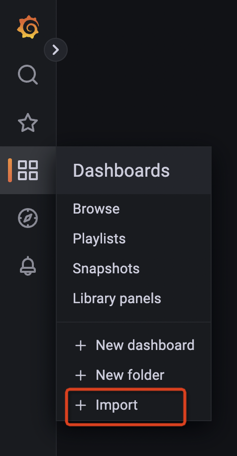
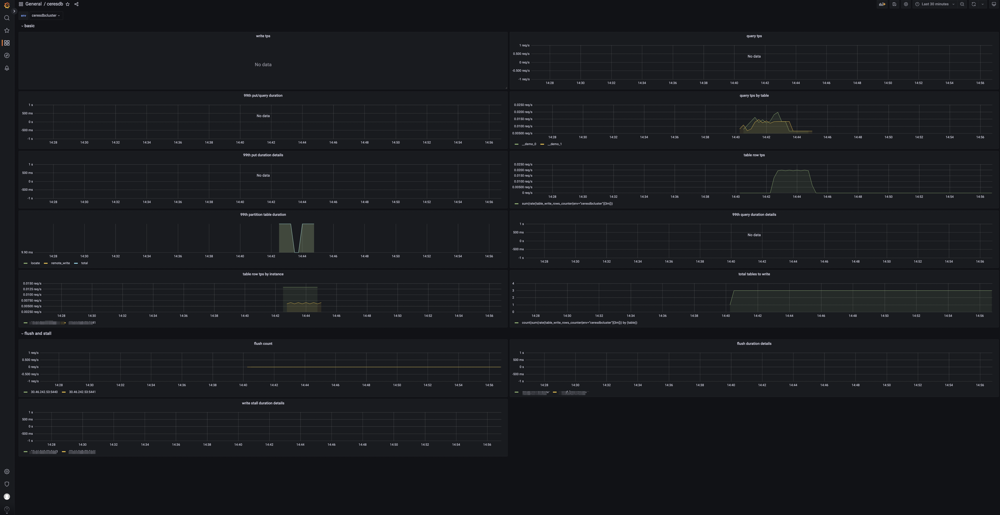
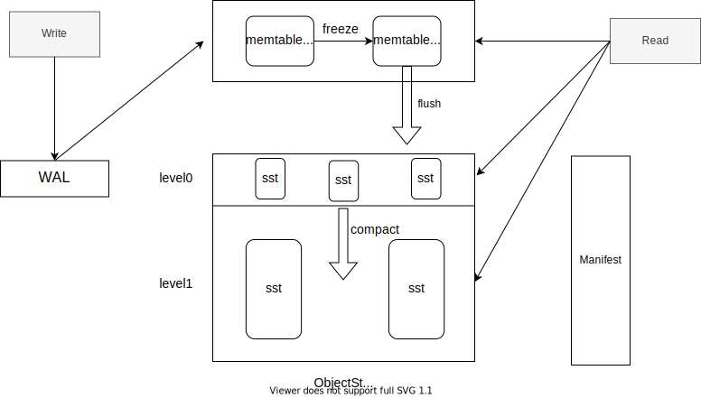

Apache HoraeDB™ (incubating) 是一款高性能、分布式的云原生时序数据库。
愿景
在经典的时序数据库中，Tag 列（InfluxDB 称为 Tag，Prometheus 称为 Label）通常使用倒排来进行索引。
我们发现在不同的情况下，Tag 的基数差异很大。在某些情况下，Tag 的基数非常高，存储和检索倒排索引的成本非常高。
同时，我们发现分析型数据库经常使用的扫描+剪枝可以很好地处理这些场景。
HoraeDB 的基础设计思想是采用混合存储格式和相应的查询方法，以便在处理时序和分析场景时都获得更好的性能。
如何使用 HoraeDB？
- 查看 快速开始 掌握快速使用 HoraeDB 的方式
- HoraeDB 支持的数据模型请查看 Data Model
- SQL 使用相关请查看 SQL
- HoraeDB 支持的相关 SDK 请查看 SDK
快速开始
本章介绍如何快速启动 HoraeDB。在这里你将会学到启动一个单机模式的 HoraeDB，然后使用 SQL 写入一些数据并查询结果。
启动
使用 HoraeDB docker 镜像 是一种最简单的启动方式；如果你还没有安装 Docker，请首先参考 这里 安装 Docker。
注意：请选择一个大于等于 v1.0.0 的 tag 镜像。
使用如下命令安装并启动一个单机版 HoraeDB。
docker run -d --name horaedb-server \
-p 8831:8831 \
-p 3307:3307 \
-p 5440:5440 \
ghcr.io/apache/horaedb-server:nightly-20231222-f57b3827
启动后 HoraeDB 会监听如下端口：
- 8831, gRPC port
- 3307, MySQL port
- 5440, HTTP port
HTTP 协议是最简单的交互方式，接下来的演示会使用 HTTP 协议进行介绍。不过在生产环境，我们推荐使用 gRPC/MySQL。
自定义 docker 的配置
参考如下命令，可以自定义 docker 中 horaedb-server 的配置，并把数据目录 /data 挂载到 docker 母机的硬盘上。
wget -c https://raw.githubusercontent.com/apache/incubator-horaedb/main/docs/minimal.toml -O horaedb.toml
sed -i 's/\/tmp\/horaedb/\/data/g' horaedb.toml
docker run -d --name horaedb-server \
-p 8831:8831 \
-p 3307:3307 \
-p 5440:5440 \
-v ./horaedb.toml:/etc/horaedb/horaedb.toml \
-v ./data:/data \
ghcr.io/apache/horaedb-server:nightly-20231222-f57b3827
写入和查询数据
建表
curl --location --request POST 'http://127.0.0.1:5440/sql' \
-d '
CREATE TABLE `demo` (
`name` string TAG,
`value` double NOT NULL,
`t` timestamp NOT NULL,
timestamp KEY (t))
ENGINE=Analytic
with
(enable_ttl="false")
'
写数据
curl --location --request POST 'http://127.0.0.1:5440/sql' \
-d '
INSERT INTO demo (t, name, value)
VALUES (1651737067000, "horaedb", 100)
'
查询
curl --location --request POST 'http://127.0.0.1:5440/sql' \
-d '
SELECT
*
FROM
`demo`
'
展示建表语句
curl --location --request POST 'http://127.0.0.1:5440/sql' \
-d '
SHOW CREATE TABLE `demo`
'
删除表
curl --location --request POST 'http://127.0.0.1:5440/sql' \
-d '
DROP TABLE `demo`
'
使用 SDK
当前我们支持多种开发语言 SDK，例如 Java，Rust，Python, Go 等, 具体使用方式请参考 sdk。
下一步
恭喜你，你已经学习了 HoraeDB 的简单使用。关于 HoraeDB 的更多信息，请参见以下内容。
SQL 语法
本章介绍 HoraeDB 的 SQL 使用语法。
数据模型
本章介绍 HoraeDB 的数据模型。
数据类型
HoraeDB 实现了 Table 模型，支持的数据类型和 MySQL 比较类似。
下列表格列出了 HoraeDB 的数据类型和 MySQL 的数据类型的对应关系。
支持的数据类型 (大小写不敏感)
| SQL | HoraeDB |
|---|---|
| null | Null |
| timestamp | Timestamp |
| double | Double |
| float | Float |
| string | String |
| Varbinary | Varbinary |
| uint64 | UInt64 |
| uint32 | UInt32 |
| uint16 | UInt16 |
| uint8 | UInt8 |
| int64/bigint | Int64 |
| int32/int | Int32 |
| int16/smallint | Int16 |
| int8/tinyint | Int8 |
| boolean | Boolean |
| date | Date |
| time | Time |
特殊字段
HoraeDB 的表的约束如下：
- 必须有主键
- 主键必须包含时间列，并且只能包含一个时间列
- 主键不可为空，并且主键的组成字段也不可为空
Timestamp 列
HoraeDB 的表必须包含一个时间戳列，对应时序数据中的时间，例如 OpenTSDB/Prometheus 的 timestamp。
时间戳列通过关键字 timestamp key 设置，例如 TIMESTAMP KEY(ts)。
Tag 列
Tag 关键字定义了一个字段作为标签列，和时序数据中的 tag 类似，例如 OpenTSDB 的 tag 或 Prometheus 的 label。
主键
主键用于数据去重和排序，由一些列和一个时间列组成。 主键可以通过以下一些方式设置：
- 使用
primary key关键字 - 使用
tag来自动生成 TSID，HoraeDB 默认将使用(TSID,timestamp)作为主键。 - 只设置时间戳列，HoraeDB 将使用
(timestamp)作为主键。
注意：如果同时指定了主键和 Tag 列，那么 Tag 列只是一个额外的信息标识，不会影响主键生成逻辑。
CREATE TABLE with_primary_key(
ts TIMESTAMP NOT NULL,
c1 STRING NOT NULL,
c2 STRING NULL,
c4 STRING NULL,
c5 STRING NULL,
TIMESTAMP KEY(ts),
PRIMARY KEY(c1, ts)
) ENGINE=Analytic WITH (ttl='7d');
CREATE TABLE with_tag(
ts TIMESTAMP NOT NULL,
c1 STRING TAG NOT NULL,
c2 STRING TAG NULL,
c3 STRING TAG NULL,
c4 DOUBLE NULL,
c5 STRING NULL,
c6 STRING NULL,
TIMESTAMP KEY(ts)
) ENGINE=Analytic WITH (ttl='7d');
CREATE TABLE with_timestamp(
ts TIMESTAMP NOT NULL,
c1 STRING NOT NULL,
c2 STRING NULL,
c3 STRING NULL,
c4 DOUBLE NULL,
c5 STRING NULL,
c6 STRING NULL,
TIMESTAMP KEY(ts)
) ENGINE=Analytic WITH (ttl='7d');
TSID
如果建表时没有设置主键，并且提供了 Tag 列，HoraeDB 会自动生成一个 TSID 列和时间戳列作为主键。TSID 由所有 Tag 列的 hash 值生成，本质上这是一种自动生成 ID 的机制。
标识符
HoraeDB 中表名、列名等标识符不能是保留关键字或以数字和标点符号开始，不过 HoraeDB 允许用反引号引用标识符（`）。在这种情况下，它可以是任何字符串，如 00_table 或 select。
表结构操作
本章介绍表结构相关 SQL 语句：
创建表
基础语法
建表的基础语法如下 ( [] 之间的内容是可选部分):
CREATE TABLE [IF NOT EXISTS]
table_name ( column_definitions )
ENGINE = engine_type
[WITH ( table_options )];
列定义的语法 :
column_name column_type [[NOT] NULL] {[TAG] | [TIMESTAMP KEY] | [PRIMARY KEY]} [DICTIONARY] [COMMENT '']
表选项的语法是键-值对，值用单引号（'）来引用。例如：
... WITH ( enable_ttl='false' )
IF NOT EXISTS
添加 IF NOT EXISTS 时，HoraeDB 在表名已经存在时会忽略建表错误。
定义列
一个列的定义至少应该包含名称和类型部分，支持的类型见 这里。
列默认为可空，即 "NULL " 关键字是隐含的；添加 NOT NULL 时列不可为空。
-- this definition
a_nullable int
-- equals to
a_nullable int NULL
-- add NOT NULL to make it required
b_not_null NOT NULL
定义列时可以使用相关的关键字将列标记为 特殊列。
对于 string 的 tag 列，推荐设置为字典类型来减少内存占用：
`tag1` string TAG DICTIONARY
引擎设置
HoraeDB 支持指定某个表使用哪种引擎，目前支持的引擎类型为 Analytic。注意这个属性设置后不可更改。
分区设置
仅适用于集群部署模式
CREATE TABLE ... PARTITION BY KEY
下面这个例子创建了一个具有 8 个分区的表，分区键为 name：
CREATE TABLE `demo` (
`name` string TAG COMMENT 'client username',
`value` double NOT NULL,
`t` timestamp NOT NULL,
timestamp KEY (t)
)
PARTITION BY KEY(name) PARTITIONS 8
ENGINE=Analytic
with (
enable_ttl='false'
)
ALTER TABLE
使用 ALTER TABLE 可以改变表的结构和参数 .
变更表结构
例如可以使用 ADD COLUMN 增加表的列 :
-- create a table and add a column to it
CREATE TABLE `t`(a int, t timestamp NOT NULL, TIMESTAMP KEY(t)) ENGINE = Analytic;
ALTER TABLE `t` ADD COLUMN (b string);
变更后的表结构如下：
-- DESCRIBE TABLE `t`;
name type is_primary is_nullable is_tag
t timestamp true false false
tsid uint64 true false false
a int false true false
b string false true false
变更表参数
例如可以使用 MODIFY SETTING 修改表的参数 :
-- create a table and add a column to it
CREATE TABLE `t`(a int, t timestamp NOT NULL, TIMESTAMP KEY(t)) ENGINE = Analytic;
ALTER TABLE `t` MODIFY SETTING write_buffer_size='300M';
上面的 SQL 用来更改 writer_buffer 大小，变更后的建表如下：
CREATE TABLE `t` (`tsid` uint64 NOT NULL, `t` timestamp NOT NULL, `a` int, PRIMARY KEY(tsid,t), TIMESTAMP KEY(t)) ENGINE=Analytic WITH(arena_block_size='2097152', compaction_strategy='default', compression='ZSTD', enable_ttl='true', num_rows_per_row_group='8192', segment_duration='', storage_format='AUTO', ttl='7d', update_mode='OVERWRITE', write_buffer_size='314572800')
除此之外，我们可以修改其 ttl 为 10 天：
ALTER TABLE `t` MODIFY SETTING ttl='10d';
DROP TABLE
基础语法
删除表的基础语法如下:
DROP TABLE [IF EXISTS] table_name
Drop Table 用来删除一个表，请谨慎使用这个语句，因为会同时删除表的定义和表的数据，并且无法恢复。
数据操作
本章介绍数据操作相关的 SQL.
INSERT
基础语法
写入数据的基础语法如下：
INSERT [INTO] tbl_name
[(col_name [, col_name] ...)]
{ {VALUES | VALUE} (value_list) [, (value_list)] ... }
写入一行数据的示例如下：
INSERT INTO demo(`timestamp`, tag1) VALUES(1667374200022, 'horaedb')
SELECT
基础语法
数据查询的基础语法如下：
SELECT select_expr [, select_expr] ...
FROM table_name
[WHERE where_condition]
[GROUP BY {col_name | expr} ... ]
[ORDER BY {col_name | expr}
[ASC | DESC]
[LIMIT [offset,] row_count ]
数据查询的语法和 mysql 类似，示例如下：
SELECT * FROM `demo` WHERE time_stamp > '2022-10-11 00:00:00' AND time_stamp < '2022-10-12 00:00:00' LIMIT 10
配置项
建表时可以使用下列的选项配置引擎：
-
enable_ttl：布尔类型，默认为true，当一个表配置 TTL 时，早于ttl的数据不会被查询到并且会被删除。 -
ttl：duration类型，默认值为7d，此项定义数据的生命周期，只在enable_ttl为true的情况下使用。 -
storage_format：string类型，数据存储的格式，有两种可选:columnar, 默认值hybrid, 注意：此功能仍在开发中，将来可能会发生变化。
上述两种存储格式详见 存储格式 部分。
存储格式
HoraeDB 支持两种存储格式，一个是 columnar, 这是传统的列式格式，一个物理列中存储表的一个列。
| Timestamp | Device ID | Status Code | Tag 1 | Tag 2 |
| --------- |---------- | ----------- | ----- | ----- |
| 12:01 | A | 0 | v1 | v1 |
| 12:01 | B | 0 | v2 | v2 |
| 12:02 | A | 0 | v1 | v1 |
| 12:02 | B | 1 | v2 | v2 |
| 12:03 | A | 0 | v1 | v1 |
| 12:03 | B | 0 | v2 | v2 |
| ..... | | | | |
另一个是 hybrid, 当前还在实验阶段的存储格式，用于在列式存储中模拟面向行的存储，以加速经典的时序查询。
在经典的时序场景中，如 IoT 或 DevOps，查询通常会先按系列 ID（或设备 ID）分组，然后再按时间戳分组。
为了在这些场景中实现良好的性能，数据的物理布局应该与这种风格相匹配， hybrid 格式就是这样提出的。
| Device ID | Timestamp | Status Code | Tag 1 | Tag 2 | minTime | maxTime |
|-----------|---------------------|-------------|-------|-------|---------|---------|
| A | [12:01,12:02,12:03] | [0,0,0] | v1 | v1 | 12:01 | 12:03 |
| B | [12:01,12:02,12:03] | [0,1,0] | v2 | v2 | 12:01 | 12:03 |
| ... | | | | | | |
- 在一个文件中，同一个主键（例如设备 ID）的数据会被压缩到一行。
- 除了主键之外的列被分成两类：
collapsible, 这些列会被压缩成一个 list，常用于时序表中的field字段。- 注意: 当前仅支持定长的字段
non-collapsible, 这些列只能包含一个去重值，常用于时序表中的tag字段。- 注意: 当前仅支持字符串类型
- 另外多加了两个字段，
minTime和maxTime， 用于查询中过滤不必要的数据。- 注意: 暂未实现此能力
示例
CREATE TABLE `device` (
`ts` timestamp NOT NULL,
`tag1` string tag,
`tag2` string tag,
`value1` double,
`value2` int,
timestamp KEY (ts)) ENGINE=Analytic
with (
enable_ttl = 'false',
storage_format = 'hybrid'
);
这段语句会创建一个混合存储格式的表, 这种情况下用户可以通过 parquet-tools查看数据格式. 上面定义的表的 parquet 结构如下所示：
message arrow_schema {
optional group ts (LIST) {
repeated group list {
optional int64 item (TIMESTAMP(MILLIS,false));
}
}
required int64 tsid (INTEGER(64,false));
optional binary tag1 (STRING);
optional binary tag2 (STRING);
optional group value1 (LIST) {
repeated group list {
optional double item;
}
}
optional group value2 (LIST) {
repeated group list {
optional int32 item;
}
}
}
常用 SQL
HoraeDB 中有许多实用的 SQL 工具，可以辅助表操作或查询检查。
查看建表语句
SHOW CREATE TABLE table_name;
SHOW CREATE TABLE 返回指定表的当前版本的创建语句，包括列定义、表引擎和参数选项等。例如：
-- create one table
CREATE TABLE `t` (a bigint, b int default 3, c string default 'x', d smallint null, t timestamp NOT NULL, TIMESTAMP KEY(t)) ENGINE = Analytic;
-- Result: affected_rows: 0
-- show how one table should be created.
SHOW CREATE TABLE `t`;
-- Result DDL:
CREATE TABLE `t` (
`t` timestamp NOT NULL,
`tsid` uint64 NOT NULL,
`a` bigint,
`b` int,
`c` string,
`d` smallint,
PRIMARY KEY(t,tsid),
TIMESTAMP KEY(t)
) ENGINE=Analytic WITH (
arena_block_size='2097152',
compaction_strategy='default',
compression='ZSTD',
enable_ttl='true',
num_rows_per_row_group='8192',
segment_duration='',
ttl='7d',
update_mode='OVERWRITE',
write_buffer_size='33554432'
)
查看表信息
DESCRIBE table_name;
DESCRIBE 语句返回一个表的详细结构信息，包括每个字段的名称和类型，字段是否为 Tag 或主键，字段是否可空等。
此外，自动生成的字段 tsid 也会展示在结果里。
例如：
CREATE TABLE `t`(a int, b string, t timestamp NOT NULL, TIMESTAMP KEY(t)) ENGINE = Analytic;
DESCRIBE TABLE `t`;
返回结果如下：
name type is_primary is_nullable is_tag
t timestamp true false false
tsid uint64 true false false
a int false true false
b string false true false
解释执行计划
EXPLAIN query;
EXPLAIN 语句结果展示一个查询如何被执行。例如：
EXPLAIN SELECT max(value) AS c1, avg(value) AS c2 FROM `t` GROUP BY name;
结果如下：
logical_plan
Projection: #MAX(07_optimizer_t.value) AS c1, #AVG(07_optimizer_t.value) AS c2
Aggregate: groupBy=[[#07_optimizer_t.name]], aggr=[[MAX(#07_optimizer_t.value), AVG(#07_optimizer_t.value)]]
TableScan: 07_optimizer_t projection=Some([name, value])
physical_plan
ProjectionExec: expr=[MAX(07_optimizer_t.value)@1 as c1, AVG(07_optimizer_t.value)@2 as c2]
AggregateExec: mode=FinalPartitioned, gby=[name@0 as name], aggr=[MAX(07_optimizer_t.value), AVG(07_optimizer_t.value)]
CoalesceBatchesExec: target_batch_size=4096
RepartitionExec: partitioning=Hash([Column { name: \"name\", index: 0 }], 6)
AggregateExec: mode=Partial, gby=[name@0 as name], aggr=[MAX(07_optimizer_t.value), AVG(07_optimizer_t.value)]
ScanTable: table=07_optimizer_t, parallelism=8, order=None
标量函数
HoraeDB SQL 基于 DataFusion 实现，支持的标量函数如下。更多详情请参考： Datafusion
数值函数
| 函数 | 描述 |
|---|---|
| abs(x) | 绝对值 |
| acos(x) | 反余弦 |
| asin(x) | 反正弦 |
| atan(x) | 反正切 |
| atan2(y, x) | y/x 的反正切 |
| ceil(x) | 小于或等于参数的最接近整数 |
| cos(x) | 余弦 |
| exp(x) | 指数 |
| floor(x) | 大于或等于参数的最接近整数 |
| ln(x) | 自然对数 |
| log10(x) | 以 10 为底的对数 |
| log2(x) | 以 2 为底的对数 |
| power(base, exponent) | 幂函数 |
| round(x) | 四舍五入 |
| signum(x) | 根据参数的正负返回 -1、0、+1 |
| sin(x) | 正弦 |
| sqrt(x) | 平方根 |
| tan(x) | 正切 |
| trunc(x) | 截断计算，取整（向零取整） |
条件函数
| 函数 | 描述 |
|---|---|
| coalesce | 如果它的参数中有一个不为 null，则返回第一个参数，如果所有参数均为 null，则返回 null。当从数据库中检索数据用于显示时，它经常用于用默认值替换 null 值。 |
| nullif | 如果 value1 等于 value2，则返回 null 值；否则返回 value1。这可用于执行与 coalesce 表达式相反的操作 |
字符函数
| 函数 | 描述 |
|---|---|
| ascii | 返回参数的第一个字符的 ascii 数字编码。在 UTF8 编码下，返回字符的 Unicode 码点。在其他多字节编码中，参数必须是 ASCII 字符。 |
| bit_length | 返回字符串的比特位数。 |
| btrim | 从字符串的开头和结尾删除给定字符串中的字符组成的最长字符串 |
| char_length | 等效于 length。 |
| character_length | 等效于 length。 |
| concat | 将两个或多个字符串合并为一个字符串。 |
| concat_ws | 使用给定的分隔符组合两个值。 |
| chr | 根据数字码返回字符。 |
| initcap | 将字符串中每个单词的首字母大写。 |
| left | 返回字符串的指定最左边字符。 |
| length | 返回字符串中字符的数量。 |
| lower | 将字符串中的所有字符转换为它们的小写。 |
| lpad | 使用特定字符集将字符串左填充到给定长度。 |
| ltrim | 从字符串的开头删除由字符中的字符组成的最长字符串（默认为空格）。 |
| md5 | 计算给定字符串的 MD5 散列值。 |
| octet_length | 等效于 length。 |
| repeat | 返回一个由输入字符串重复指定次数组成的字符串。 |
| replace | 替换字符串中所有子字符串的出现为新子字符串。 |
| reverse | 反转字符串。 |
| right | 返回字符串的指定最右边字符。 |
| rpad | 使用特定字符集将字符串右填充到给定长度。 |
| rtrim | 从字符串的结尾删除包含 characters 中任何字符的最长字符串。 |
| digest | 计算给定字符串的散列值。 |
| split_part | 按指定分隔符拆分字符串，并从结果数组中返回 |
| starts_with | 检查字符串是否以给定字符串开始 |
| strpos | 搜索字符串是否包含一个给定的字符串，并返回位置 |
| substr | 提取子字符串 |
| translate | 把字符串翻译成另一种字符集 Translates one set of characters into another. |
| trim | 移除字符串两侧的空白字符或其他指定字符。 |
| upper | 将字符串中的所有字符转换为它们的大写。 |
正则函数
| 函数 | 描述 |
|---|---|
| regexp_match | 判断一个字符串是否匹配正则表达式 |
| regexp_replace | 使用新字符串替换正则匹配的字符串中内容 |
时间函数
| 函数 | 描述 |
|---|---|
| to_timestamp | 将字符串转换为 Timestamp(Nanoseconds，None)类型。 |
| to_timestamp_millis | 将字符串转换为 Timestamp(Milliseconds，None)类型。 |
| to_timestamp_micros | 将字符串转换为 Timestamp(Microseconds，None)类型。 |
| to_timestamp_seconds | 将字符串转换为 Timestamp(Seconds，None)类型。 |
| extract | 从日期/时间值中检索年份或小时等子字段。 |
| date_part | 从日期/时间值中检索子字段。 |
| date_trunc | 将日期/时间值截断到指定的精度。 |
| date_bin | 将日期/时间值按指定精度进行分组。 |
| from_unixtime | 将 Unix 时代转换为 Timestamp(Nanoseconds，None)类型。 |
| now | 作为 Timestamp(Nanoseconds，UTC)返回当前时间。 |
其他函数
| Function | 描述 |
|---|---|
| array | 创建有一个数组 |
| arrow_typeof | 返回内置的数据类型 |
| in_list | 检测数值是否在 list 里面 |
| random | 生成随机值 |
| sha224 | sha224 |
| sha256 | sha256 |
| sha384 | sha384 |
| sha512 | sha512 |
| to_hex | 转换为 16 进制 |
聚合函数
HoraeDB SQL 基于 DataFusion 实现，支持的聚合函数如下。更多详情请参考： Datafusion
常用
| 函数 | 描述 |
|---|---|
| min | 最小值 |
| max | 最大值 |
| count | 求行数 |
| avg | 平均值 |
| sum | 求和 |
| array_agg | 把数据放到一个数组 |
统计
| 函数 | 描述 |
|---|---|
| var / var_samp | 返回给定列的样本方差 |
| var_pop | 返回给定列的总体方差 |
| stddev / stddev_samp | 返回给定列的样本标准差 |
| stddev_pop | 返回给定列的总体标准差 |
| covar / covar_samp | 返回给定列的样本协方差 |
| covar_pop | 返回给定列的总体协方差 |
| corr | 返回给定列的相关系数 |
估值函数
| 函数 | 描述 |
|---|---|
| approx_distinct | 返回输入值的近似去重数量（HyperLogLog） |
| approx_median | 返回输入值的近似中位数，它是 approx_percentile_cont(x, 0.5) 的简单写法 |
| approx_percentile_cont | 返回输入值的近似百分位数（TDigest），其中 p 是 0 和 1（包括）之间的 float64，等同于 approx_percentile_cont_with_weight(x, 1, p) |
| approx_percentile_cont_with_weight | 返回输入值带权重的近似百分位数（TDigest），其中 w 是权重列表达式，p 是 0 和 1（包括）之间的 float64 |
集群部署
在快速开始部分我们已经介绍过单机版本 HoraeDB 的部署。
除此之外，HoraeDB 作为一个分布式时序数据库，多个 HoraeDB 实例能够以集群的方式提供可伸缩和高可用的数据服务。
由于目前 HoraeDB 对于 Kubernetes 的支持还在开发之中，目前 HoraeDB 集群部署只能通过手动完成，集群部署的模式主要有两种，两者的区别在于是否需要部署 HoraeMeta，对于 NoMeta 的模式，我们仅建议在测试场景下使用。
作为一个开源的数据库，HoraeDB 可以部署在基于英特尔 /ARM 架构的服务器，以及常见的虚拟环境。
| OS | status |
|---|---|
| Ubuntu LTS 16.06 or later | ✅ |
| CentOS 7.3 or later | ✅ |
| Red Hat Enterprise Linux 7.3 or later 7.x releases | ✅ |
| macOS 11 or later | ✅ |
| Windows | ❌ |
- 生产环境下 , Linux 是首选平台。
- macOS 主要用在开发环境。
注意：此功能仅供测试使用，不推荐生产使用，相关功能将来可能会发生变化。
NoMeta 模式
本章介绍如何部署一个静态（无 HoraeMeta）的 HoraeDB 集群。
在没有 HoraeMeta 的情况下，利用 HoraeDB 服务端针对表名提供了可配置的路由功能即可实现集群化部署，为此我们需要提供一个包含路由规则的正确配置。根据这个配置，请求会被发送到集群中的每个 HoraeDB 实例。
目标
本文的目标是：在同一台机器上部署一个集群，这个集群包含两个 HoraeDB 实例。
如果想要部署一个更大规模的集群，参考此方案也可以进行部署。
准备配置文件
基础配置
HoraeDB 的基础配置如下：
[server]
bind_addr = "0.0.0.0"
http_port = 5440
grpc_port = 8831
[logger]
level = "info"
[tracing]
dir = "/tmp/horaedb"
[analytic.storage.object_store]
type = "Local"
data_dir = "/tmp/horaedb"
[analytic.wal]
type = "RocksDB"
data_dir = "/tmp/horaedb"
为了在同一个机器上部署两个实例，我们需要为每个实例配置不同的服务端口和数据目录。
实例 HoraeDB_0 的配置如下：
[server]
bind_addr = "0.0.0.0"
http_port = 5440
grpc_port = 8831
[logger]
level = "info"
[tracing]
dir = "/tmp/horaedb_0"
[analytic.storage.object_store]
type = "Local"
data_dir = "/tmp/horaedb_0"
[analytic.wal]
type = "RocksDB"
data_dir = "/tmp/horaedb_0"
实例 HoraeDB_1 的配置如下：
[server]
bind_addr = "0.0.0.0"
http_port = 15440
grpc_port = 18831
[logger]
level = "info"
[tracing]
dir = "/tmp/horaedb_1"
[analytic.storage.object_store]
type = "Local"
data_dir = "/tmp/horaedb_1"
[analytic.wal]
type = "RocksDB"
data_dir = "/tmp/horaedb_1"
Schema 和 Shard
接下来我们需要定义 Schema 和分片以及路由规则。
如下定义了 Schema 和分片：
[cluster_deployment]
mode = "NoMeta"
[[cluster_deployment.topology.schema_shards]]
schema = 'public_0'
[[cluster_deployment.topology.schema_shards.shard_views]]
shard_id = 0
[cluster_deployment.topology.schema_shards.shard_views.endpoint]
addr = '127.0.0.1'
port = 8831
[[cluster_deployment.topology.schema_shards.shard_views]]
shard_id = 1
[cluster_deployment.topology.schema_shards.shard_views.endpoint]
addr = '127.0.0.1'
port = 8831
[[cluster_deployment.topology.schema_shards]]
schema = 'public_1'
[[cluster_deployment.topology.schema_shards.shard_views]]
shard_id = 0
[cluster_deployment.topology.schema_shards.shard_views.endpoint]
addr = '127.0.0.1'
port = 8831
[[cluster_deployment.topology.schema_shards.shard_views]]
shard_id = 1
[cluster_deployment.topology.schema_shards.shard_views.endpoint]
addr = '127.0.0.1'
port = 18831
上述的配置中，定义了两个 Schema：
public_0有两个分片在HoraeDB_0实例上。public_1有两个分片同时在HoraeDB_0和HoraeDB_1实例上。
路由规则
定义 Schema 和分片后，需要定义路由规则，如下是一个前缀路由规则：
[[cluster_deployment.route_rules.prefix_rules]]
schema = 'public_0'
prefix = 'prod_'
shard = 0
在这个规则里，public_0 中表名以 prod_ 为前缀的所有表属于，相关操作会被路由到 shard_0 也就是 HoraeDB_0 实例。 public_0 中其他的表会以 hash 的方式路由到 shard_0 和 shard_1.
在前缀规则之外，我们也可以定义一个 hash 规则：
[[cluster_deployment.route_rules.hash_rules]]
schema = 'public_1'
shards = [0, 1]
这个规则告诉 HoraeDB, public_1 的所有表会被路由到 public_1 的 shard_0 and shard_1, 也就是 HoraeDB0 和 HoraeDB_1.
实际上如果没有定义 public_1 的路由规则，这是默认的路由行为。
HoraeDB_0 和 HoraeDB_1 实例完整的配置文件如下：
[server]
bind_addr = "0.0.0.0"
http_port = 5440
grpc_port = 8831
[logger]
level = "info"
[tracing]
dir = "/tmp/horaedb_0"
[analytic.storage.object_store]
type = "Local"
data_dir = "/tmp/horaedb_0"
[analytic.wal]
type = "RocksDB"
data_dir = "/tmp/horaedb_0"
[cluster_deployment]
mode = "NoMeta"
[[cluster_deployment.topology.schema_shards]]
schema = 'public_0'
[[cluster_deployment.topology.schema_shards.shard_views]]
shard_id = 0
[cluster_deployment.topology.schema_shards.shard_views.endpoint]
addr = '127.0.0.1'
port = 8831
[[cluster_deployment.topology.schema_shards.shard_views]]
shard_id = 1
[cluster_deployment.topology.schema_shards.shard_views.endpoint]
addr = '127.0.0.1'
port = 8831
[[cluster_deployment.topology.schema_shards]]
schema = 'public_1'
[[cluster_deployment.topology.schema_shards.shard_views]]
shard_id = 0
[cluster_deployment.topology.schema_shards.shard_views.endpoint]
addr = '127.0.0.1'
port = 8831
[[cluster_deployment.topology.schema_shards.shard_views]]
shard_id = 1
[cluster_deployment.topology.schema_shards.shard_views.endpoint]
addr = '127.0.0.1'
port = 18831
[server]
bind_addr = "0.0.0.0"
http_port = 15440
grpc_port = 18831
[logger]
level = "info"
[tracing]
dir = "/tmp/horaedb_1"
[analytic.storage.object_store]
type = "Local"
data_dir = "/tmp/horaedb_1"
[analytic.wal]
type = "RocksDB"
data_dir = "/tmp/horaedb_1"
[cluster_deployment]
mode = "NoMeta"
[[cluster_deployment.topology.schema_shards]]
schema = 'public_0'
[[cluster_deployment.topology.schema_shards.shard_views]]
shard_id = 0
[cluster_deployment.topology.schema_shards.shard_views.endpoint]
addr = '127.0.0.1'
port = 8831
[[cluster_deployment.topology.schema_shards.shard_views]]
shard_id = 1
[cluster_deployment.topology.schema_shards.shard_views.endpoint]
addr = '127.0.0.1'
port = 8831
[[cluster_deployment.topology.schema_shards]]
schema = 'public_1'
[[cluster_deployment.topology.schema_shards.shard_views]]
shard_id = 0
[cluster_deployment.topology.schema_shards.shard_views.endpoint]
addr = '127.0.0.1'
port = 8831
[[cluster_deployment.topology.schema_shards.shard_views]]
shard_id = 1
[cluster_deployment.topology.schema_shards.shard_views.endpoint]
addr = '127.0.0.1'
port = 18831
我们给这两份不同的配置文件分别命名为 config_0.toml 和 config_1.toml；
但是在实际环境中不同的实例可以部署在不同的服务器上，也就是说，不同的实例没有必要设置不同的服务端口和数据目录，这种情况下实例的配置可以使用同一份配置文件。
启动 HoraeDB
配置准备好后，我们就可以开始启动 HoraeDB 容器了。
启动命令如下：
sudo docker run -d -t --name horaedb_0 -p 5440:5440 -p 8831:8831 -v $(pwd)/config_0.toml:/etc/horaedb/horaedb.toml horaedb/horaedb-server
sudo docker run -d -t --name horaedb_1 -p 15440:15440 -p 18831:18831 -v $(pwd)/config_1.toml:/etc/horaedb/horaedb.toml horaedb/horaedb-server
容器启动成功后，两个实例的 HoraeDB 集群就搭建完成了，可以开始提供读写服务。
WithMeta 模式
本文展示如何部署一个由 HoraeMeta 控制的 HoraeDB 集群，有了 HoraeMeta 提供的服务，如果 HoraeDB 使用存储不在本地的话，就可以实现很多分布式特性，比如水平扩容、负载均衡、服务高可用等。
部署 HoraeMeta
HoraeMeta 是 HoraeDB 分布式模式的核心服务之一，用于管理 HoraeDB 节点的调度，为 HoraeDB 集群提供高可用、负载均衡、集群管控等能力。 HoraeMeta 本身通过嵌入式的 ETCD 保障高可用。此外，ETCD 的服务也被暴露给 HoraeDB 用于实现分布式锁使用。
编译打包
- 安装 Golang，版本号 >= 1.19。
- 在项目根目录下使用
make build进行编译打包。
部署方式
启动配置
目前 HoraeMeta 支持以配置文件和环境变量两种方式来指定服务启动配置。我们提供了配置文件方式启动的示例，具体可以参考 config。 环境变量的配置优先级高于配置文件，当同时存在时，以环境变量为准。
动态拓扑和静态拓扑
即使使用了 HoraeMeta 来部署 HoraeDB 集群，也可以选择静态拓扑或动态拓扑。对于静态拓扑，表的分布在集群初始化后是静态的，而对于动态拓扑，表可以在不同的 HoraeDB 节点之间进行动态迁移以达到负载平衡或者 failover 的目的。但是动态拓扑只有在 HoraeDB 节点使用的存储是非本地的情况下才能启用，否则会因为表的数据是持久化在本地，当表转移到不同的 HoraeDB 节点时会导致数据损坏。
目前，HoraeMeta 默认关闭集群拓扑的动态调度，并且在本篇指南中，这个选项也不会被开启，因为指南中的例子采用的是本地存储。如果要启用动态调度，可以将 TOPOLOGY_TYPE 设置为 dynamic（默认为 static），之后负载均衡和 failover 将会起作用。但是需要注意的是，如果底层存储是本地磁盘，则不要启用它。
此外对于静态拓扑，参数 DEFAULT_CLUSTER_NODE_COUNT 表示已部署集群中 HoraeDB 节点的数量，应该被设置为 HoraeDB 服务器的实际机器数，这个参数非常重要，因为集群初始化完毕之后，HoraeDB 集群将无法再增减机器。
启动实例
HoraeMeta 基于 etcd 实现高可用，在线上环境我们一般部署多个节点，但是在本地环境和测试时，可以直接部署单个节点来简化整个部署流程。
- 单节点
docker run -d --name horaemeta-server \
-p 2379:2379 \
ghcr.io/apache/horaemeta-server:nightly-20231225-ab067bf0
- 多节点
wget https://raw.githubusercontent.com/apache/incubator-horaedb-docs/main/docs/src/resources/config-horaemeta-cluster0.toml
docker run -d --network=host --name horaemeta-server0 \
-v $(pwd)/config-horaemeta-cluster0.toml:/etc/horaemeta/horaemeta.toml \
ghcr.io/apache/horaemeta-server:nightly-20231225-ab067bf0
wget https://raw.githubusercontent.com/apache/incubator-horaedb-docs/main/docs/src/resources/config-horaemeta-cluster1.toml
docker run -d --network=host --name horaemeta-server1 \
-v $(pwd)/config-horaemeta-cluster1.toml:/etc/horaemeta/horaemeta.toml \
ghcr.io/apache/horaemeta-server:nightly-20231225-ab067bf0
wget https://raw.githubusercontent.com/apache/incubator-horaedb-docs/main/docs/src/resources/config-horaemeta-cluster2.toml
docker run -d --network=host --name horaemeta-server2 \
-v $(pwd)/config-horaemeta-cluster2.toml:/etc/horaemeta/horaemeta.toml \
ghcr.io/apache/horaemeta-server:nightly-20231225-ab067bf0
如果 HoraeDB 底层采用的是远程存储，可以环境变量来开启动态调度：只需将 -e ENABLE_SCHEDULE=true 加入到 docker run 命令中去。
部署 HoraeDB
在 NoMeta 模式中，由于 HoraeDB 集群拓扑是静态的，因此 HoraeDB 只需要一个本地存储来作为底层的存储层即可。但是在 WithMeta 模式中，集群的拓扑是可以变化的，因此如果 HoraeDB 的底层存储使用一个独立的存储服务的话，HoraeDB 集群就可以获得分布式系统的一些特性：高可用、负载均衡、水平扩展等。
当然，HoraeDB 仍然可以使用本地存储，这样的话，集群的拓扑仍然是静态的。
存储相关的配置主要包括两个部分：
- Object Storage
- WAL Storage
注意：在生产环境中如果我们把 HoraeDB 部署在多个节点上时，请按照如下方式把机器的网络地址设置到环境变量中：
export HORAEDB_SERVER_ADDR="{server_addr}:8831"
注意，此网络地址用于 HoraeMeta 和 HoraeDB 通信使用，需保证网络联通可用。
Object Storage
本地存储
类似 NoMeta 模式，我们仍然可以为 HoraeDB 配置一个本地磁盘作为底层存储：
[analytic.storage.object_store]
type = "Local"
data_dir = "/home/admin/data/horaedb"
OSS
Aliyun OSS 也可以作为 HoraeDB 的底层存储，以此提供数据容灾能力。下面是一个配置示例，示例中的模版变量需要被替换成实际的 OSS 参数才可以真正的使用：
[analytic.storage.object_store]
type = "Aliyun"
key_id = "{key_id}"
key_secret = "{key_secret}"
endpoint = "{endpoint}"
bucket = "{bucket}"
prefix = "{data_dir}"
S3
Amazon S3 也可以作为 HoraeDB 的底层存储，下面是一个配置示例，示例中的模版变量需要被替换成实际的 S3 参数才可以真正的使用：
[analytic.storage.object_store]
type = "S3"
region = "{region}"
key_id = "{key_id}"
key_secret = "{key_secret}"
endpoint = "{endpoint}"
bucket = "{bucket}"
prefix = "{prefix}"
WAL Storage
RocksDB
基于 RocksDB 的 WAL 也是一种本地存储，无第三方依赖，可以很方便的快速部署：
[analytic.wal]
type = "RocksDB"
data_dir = "/home/admin/data/horaedb"
OceanBase
如果已经有了一个部署好的 OceanBase 集群的话，HoraeDB 可以使用它作为 WAL Storage 来保证其数据的容灾性。下面是一个配置示例，示例中的模版变量需要被替换成实际的 OceanBase 集群的参数才可以真正的使用：
[analytic.wal]
type = "Obkv"
[analytic.wal.data_namespace]
ttl = "365d"
[analytic.wal.obkv]
full_user_name = "{full_user_name}"
param_url = "{param_url}"
password = "{password}"
[analytic.wal.obkv.client]
sys_user_name = "{sys_user_name}"
sys_password = "{sys_password}"
Kafka
如果你已经部署了一个 Kafka 集群，HoraeDB 可以也可以使用它作为 WAL Storage。下面是一个配置示例，示例中的模版变量需要被替换成实际的 Kafka 集群的参数才可以真正的使用：
[analytic.wal]
type = "Kafka"
[analytic.wal.kafka.client]
boost_broker = "{boost_broker}"
Meta 客户端配置
除了存储层的配置外，HoraeDB 需要 HoraeMeta 相关的配置来与 HoraeMeta 集群进行通信：
[cluster.meta_client]
cluster_name = 'defaultCluster'
meta_addr = 'http://{HoraeMetaAddr}:2379'
lease = "10s"
timeout = "5s"
[cluster_deployment.etcd_client]
server_addrs = ['http://{HoraeMetaAddr}:2379']
完整配置
将上面提到的所有关键配置合并之后，我们可以得到一个完整的、可运行的配置。为了让这个配置可以直接运行起来，配置中均采用了本地存储：基于 RocksDB 的 WAL 和本地磁盘的 Object Storage：
[server]
bind_addr = "0.0.0.0"
http_port = 5440
grpc_port = 8831
[logger]
level = "info"
[runtime]
read_thread_num = 20
write_thread_num = 16
background_thread_num = 12
[cluster_deployment]
mode = "WithMeta"
[cluster_deployment.meta_client]
cluster_name = 'defaultCluster'
meta_addr = 'http://127.0.0.1:2379'
lease = "10s"
timeout = "5s"
[cluster_deployment.etcd_client]
server_addrs = ['127.0.0.1:2379']
[analytic]
write_group_worker_num = 16
replay_batch_size = 100
max_replay_tables_per_batch = 128
write_group_command_channel_cap = 1024
sst_background_read_parallelism = 8
[analytic.manifest]
scan_batch_size = 100
snapshot_every_n_updates = 10000
scan_timeout = "5s"
store_timeout = "5s"
[analytic.wal]
type = "RocksDB"
data_dir = "/home/admin/data/horaedb"
[analytic.storage]
mem_cache_capacity = "20GB"
# 1<<8=256
mem_cache_partition_bits = 8
[analytic.storage.object_store]
type = "Local"
data_dir = "/home/admin/data/horaedb/"
[analytic.table_opts]
arena_block_size = 2097152
write_buffer_size = 33554432
[analytic.compaction]
schedule_channel_len = 16
schedule_interval = "30m"
max_ongoing_tasks = 8
memory_limit = "4G"
将这个配置命名成 config.toml。至于使用远程存储的配置示例在下面我们也提供了，需要注意的是，配置中的相关参数需要被替换成实际的参数才能真正使用：
启动集群
首先，我们先启动 HoraeMeta：
docker run -d --name horaemeta-server \
-p 2379:2379 \
ghcr.io/apache/horaemeta-server:nightly-20231225-ab067bf0
HoraeMeta 启动好了，没有问题之后，就可以把 HoraeDB 的容器创建出来： TODO: 补充完整
SDK 文档
Java 客户端使用文档
介绍
HoraeDBClient 是 HoraeDB 的高性能 Java 版客户端。
环境要求
Java 8 及以上
依赖
<dependency>
<groupId>io.ceresdb</groupId>
<artifactId>ceresdb-all</artifactId>
<version>${CERESDB.VERSION}</version>
</dependency>
最新的版本可以从这里获取。
初始化客户端
// CeresDB options
final CeresDBOptions opts = CeresDBOptions.newBuilder("127.0.0.1", 8831, DIRECT) // 默认 gprc 端口号，DIRECT 模式
.database("public") // Client所使用的database，可被RequestContext的database覆盖
.writeMaxRetries(1) // 写入失败重试次数上限（只有部分错误 code 才会重试，比如路由表失效）
.readMaxRetries(1) // 查询失败重试次数上限（只有部分错误 code 才会重试，比如路由表失效）
.build();
final CeresDBClient client = new CeresDBClient();
if (!client.init(opts)) {
throw new IllegalStateException("Fail to start CeresDBClient");
}
客户端初始化至少需要三个参数：
- EndPoint： 127.0.0.1
- Port： 8831
- RouteMode： DIRECT/PROXY
这里重点解释下 RouteMode 参数，PROXY 模式用在客户端和服务端存在网络隔离，请求需要经过转发的场景；DIRECT 模式用在客户端和服务端网络连通的场景，节省转发的开销，具有更高的性能。
更多的参数配置详情见 configuration。
注意： HoraeDB 当前仅支持默认的 public database , 未来会支持多个 database。
建表
为了方便使用，在使用 gRPC 的 write 接口进行写入时，如果某个表不存在，HoraeDB 会根据第一次的写入自动创建一个表。
当然你也可以通过 create table 语句来更精细化的管理的表（比如添加索引等）。
下面的建表语句（使用 SDK 的 SQL API）包含了 HoraeDB 支持的所有字段类型：
String createTableSql = "CREATE TABLE IF NOT EXISTS machine_table(" +
"ts TIMESTAMP NOT NULL," +
"city STRING TAG NOT NULL," +
"ip STRING TAG NOT NULL," +
"cpu DOUBLE NULL," +
"mem DOUBLE NULL," +
"TIMESTAMP KEY(ts)" + // 建表时必须指定时间戳序列
") ENGINE=Analytic";
Result<SqlQueryOk, Err> createResult = client.sqlQuery(new SqlQueryRequest(createTableSql)).get();
if (!createResult.isOk()) {
throw new IllegalStateException("Fail to create table");
}
删表
下面是一个删表的示例：
String dropTableSql = "DROP TABLE machine_table";
Result<SqlQueryOk, Err> dropResult = client.sqlQuery(new SqlQueryRequest(dropTableSql)).get();
if (!dropResult.isOk()) {
throw new IllegalStateException("Fail to drop table");
}
数据写入
首先我们需要构建数据，示例如下：
List<Point> pointList = new LinkedList<>();
for (int i = 0; i < 100; i++) {
// 构建单个Point
final Point point = Point.newPointBuilder("machine_table")
.setTimestamp(t0)
.addTag("city", "Singapore")
.addTag("ip", "10.0.0.1")
.addField("cpu", Value.withDouble(0.23))
.addField("mem", Value.withDouble(0.55))
.build();
points.add(point);
}
然后使用 write 接口写入数据，示例如下：
final CompletableFuture<Result<WriteOk, Err>> wf = client.write(pointList);
// 这里用 `future.get` 只是方便演示，推荐借助 CompletableFuture 强大的 API 实现异步编程
final Result<WriteOk, Err> writeResult = wf.get();
Assert.assertTrue(writeResult.isOk());
Assert.assertEquals(3, writeResult.getOk().getSuccess());
// `Result` 类参考了 Rust 语言，提供了丰富的 mapXXX、andThen 类 function 方便对结果值进行转换，提高编程效率，欢迎参考 API 文档使用
Assert.assertEquals(3, writeResult.mapOr(0, WriteOk::getSuccess).intValue());
Assert.assertEquals(0, writeResult.getOk().getFailed());
Assert.assertEquals(0, writeResult.mapOr(-1, WriteOk::getFailed).intValue());
详情见 write
数据查询
final SqlQueryRequest queryRequest = SqlQueryRequest.newBuilder()
.forTables("machine_table") // 这里表名是可选的，如果未提供，SDK将自动解析SQL填充表名并自动路由
.sql("select * from machine_table where ts = %d", t0) //
.build();
final CompletableFuture<Result<SqlQueryOk, Err>> qf = client.sqlQuery(queryRequest);
// 这里用 `future.get` 只是方便演示，推荐借助 CompletableFuture 强大的 API 实现异步编程
final Result<SqlQueryOk, Err> queryResult = qf.get();
Assert.assertTrue(queryResult.isOk());
final SqlQueryOk queryOk = queryResult.getOk();
Assert.assertEquals(1, queryOk.getRowCount());
// 直接获取结果数组
final List<Row> rows = queryOk.getRowList();
Assert.assertEquals(t0, rows.get(0).getColumn("ts").getValue().getTimestamp());
Assert.assertEquals("Singapore", rows.get(0).getColumn("city").getValue().getString());
Assert.assertEquals("10.0.0.1", rows.get(0).getColumn("ip").getValue().getString());
Assert.assertEquals(0.23, rows.get(0).getColumn("cpu").getValue().getDouble(), 0.0000001);
Assert.assertEquals(0.55, rows.get(0).getColumn("mem").getValue().getDouble(), 0.0000001);
// 获取结果流
final Stream<Row> rowStream = queryOk.stream();
rowStream.forEach(row -> System.out.println(row.toString()));
详情见 read
流式读写
HoraeDB 支持流式读写，适用于大规模数据读写。
long start = System.currentTimeMillis();
long t = start;
final StreamWriteBuf<Point, WriteOk> writeBuf = client.streamWrite("machine_table");
for (int i = 0; i < 1000; i++) {
final Point streamData = Point.newPointBuilder("machine_table")
.setTimestamp(t)
.addTag("city", "Beijing")
.addTag("ip", "10.0.0.3")
.addField("cpu", Value.withDouble(0.42))
.addField("mem", Value.withDouble(0.67))
.build();
writeBuf.writeAndFlush(Collections.singletonList(streamData));
t = t+1;
}
final CompletableFuture<WriteOk> writeOk = writeBuf.completed();
Assert.assertEquals(1000, writeOk.join().getSuccess());
final SqlQueryRequest streamQuerySql = SqlQueryRequest.newBuilder()
.sql("select * from %s where city = '%s' and ts >= %d and ts < %d", "machine_table", "Beijing", start, t).build();
final Result<SqlQueryOk, Err> streamQueryResult = client.sqlQuery(streamQuerySql).get();
Assert.assertTrue(streamQueryResult.isOk());
Assert.assertEquals(1000, streamQueryResult.getOk().getRowCount());
详情见 streaming
Go
安装
go get github.com/apache/incubator-horaedb-client-go
你可以在这里找到最新的版本 here.
如何使用
初始化客户端
client, err := horaedb.NewClient(endpoint, horaedb.Direct,
horaedb.WithDefaultDatabase("public"), // Client所使用的database
)
| 参数名称 | 说明 |
|---|---|
| defaultDatabase | 所使用的 database，可以被单个 Write 或者 SQLRequest 请求中的 database 覆盖 |
| RPCMaxRecvMsgSize | grpc MaxCallRecvMsgSize 配置, 默认是 1024 _ 1024 _ 1024 |
| RouteMaxCacheSize | 如果 router 客户端中的 路由缓存超过了这个值，将会淘汰最不活跃的直至降低这个阈值, 默认是 10000 |
注意： HoraeDB 当前仅支持预创建的 public database , 未来会支持多个 database。
管理表
HoraeDB 使用 SQL 来管理表格，比如创建表、删除表或者新增列等等，这和你在使用 SQL 管理其他的数据库时没有太大的区别。
为了方便使用，在使用 gRPC 的 write 接口进行写入时，如果某个表不存在，HoraeDB 会根据第一次的写入自动创建一个表。
当然你也可以通过 create table 语句来更精细化的管理的表（比如添加索引等）。
创建表的样例
createTableSQL := `
CREATE TABLE IF NOT EXISTS demo (
name string TAG,
value double,
t timestamp NOT NULL,
TIMESTAMP KEY(t)
) ENGINE=Analytic with (enable_ttl=false)`
req := horaedb.SQLQueryRequest{
Tables: []string{"demo"},
SQL: createTableSQL,
}
resp, err := client.SQLQuery(context.Background(), req)
删除表的样例
dropTableSQL := `DROP TABLE demo`
req := horaedb.SQLQueryRequest{
Tables: []string{"demo"},
SQL: dropTableSQL,
}
resp, err := client.SQLQuery(context.Background(), req)
构建写入数据
points := make([]horaedb.Point, 0, 2)
for i := 0; i < 2; i++ {
point, err := horaedb.NewPointBuilder("demo").
SetTimestamp(now)).
AddTag("name", horaedb.NewStringValue("test_tag1")).
AddField("value", horaedb.NewDoubleValue(0.4242)).
Build()
if err != nil {
panic(err)
}
points = append(points, point)
}
写入数据
req := horaedb.WriteRequest{
Points: points,
}
resp, err := client.Write(context.Background(), req)
查询数据
querySQL := `SELECT * FROM demo`
req := horaedb.SQLQueryRequest{
Tables: []string{"demo"},
SQL: querySQL,
}
resp, err := client.SQLQuery(context.Background(), req)
if err != nil {
panic(err)
}
fmt.Printf("query table success, rows:%+v\n", resp.Rows)
示例
你可以在这里找到完整的示例。
Python
介绍
horaedb-client 是 HoraeDB python 客户端.
借助于 PyO3，python 客户端的实现实际上是基于 rust 客户端 的封装。
本手册将会介绍 python client 的一些基本用法，其中涉及到的完整示例，可以查看该示例代码.
环境要求
- Python >= 3.7
安装
pip install ceresdb-client
你可以在这里找到最新的版本 here.
初始化客户端
首先介绍下如何初始化客户端，代码示例如下：
import asyncio
import datetime
from ceresdb_client import Builder, RpcContext, PointBuilder, ValueBuilder, WriteRequest, SqlQueryRequest, Mode, RpcConfig
rpc_config = RpcConfig()
rpc_config = RpcConfig()
rpc_config.thread_num = 1
rpc_config.default_write_timeout_ms = 1000
builder = Builder('127.0.0.1:8831', Mode.Direct)
builder.set_rpc_config(rpc_config)
builder.set_default_database('public')
client = builder.build()
代码的最开始部分是依赖库的导入，在后面的示例中将省略这部分。
客户端初始化需要至少两个参数：
Endpoint： 服务端地址，由 ip 和端口组成，例如127.0.0.1：8831;Mode: 客户端和服务端通信模式，有两种模式可供选择:Direct和Proxy。
这里重点介绍下通信模式 Mode， 当客户端可以访问所有的服务器的时候，建议采用 Direct 模式，以减少转发开销；但是如果客户端访问服务器必须要经过网关，那么只能选择 Proxy 模式。
至于 default_database，会在执行 RPC 请求时未通过 RpcContext 设置 database 的情况下，将被作为目标 database 使用。
最后，通过配置 RpcConfig, 可以管理客户端使用的资源和调整其性能，所有的配置参数可以参考这里.
建表
为了方便使用，在使用 gRPC 的 write 接口进行写入时，如果某个表不存在，HoraeDB 会根据第一次的写入自动创建一个表。
当然你也可以通过 create table 语句来更精细化的管理的表（比如添加索引等）。
初始化客户端后，建表示例如下：
def async_query(client, ctx, req):
await client.sql_query(ctx, req)
create_table_sql = 'CREATE TABLE IF NOT EXISTS demo ( \
name string TAG, \
value double, \
t timestamp NOT NULL, \
TIMESTAMP KEY(t)) ENGINE=Analytic with (enable_ttl=false)'
req = SqlQueryRequest(['demo'], create_table_sql)
rpc_ctx = RpcContext()
rpc_ctx.database = 'public'
rpc_ctx.timeout_ms = 100
event_loop = asyncio.get_event_loop()
event_loop.run_until_complete(async_query(client, rpc_ctx, req))
RpcContext 可以用来指定目标 database （可以覆盖在初始化的时候设置的 default_space） 和超时参数。
数据写入
可以使用 PointBuilder 来构建一个 point（实际上就是数据集的一行），多个 point 构成一个写入请求。
示例如下:
async def async_write(client, ctx, req):
return await client.write(ctx, req)
point_builder = PointBuilder('demo')
point_builder.set_timestamp(1000 * int(round(datetime.datetime.now().timestamp())))
point_builder.set_tag("name", ValueBuilder().string("test_tag1"))
point_builder.set_field("value", ValueBuilder().double(0.4242))
point = point_builder.build()
write_request = WriteRequest()
write_request.add_point(point)
event_loop = asyncio.get_event_loop()
event_loop.run_until_complete(async_write(client, ctx, req))
数据查询
通过 sql_query 接口, 可以方便地从服务端查询数据：
req = SqlQueryRequest(['demo'], 'select * from demo')
event_loop = asyncio.get_event_loop()
resp = event_loop.run_until_complete(async_query(client, ctx, req))
如示例所展示, 构建 SqlQueryRequest 需要两个参数:
- 查询 sql 中涉及到的表；
- 查询 sql.
当前为了查询的性能，第一个参数是必须的。
查询到数据后，逐行逐列处理数据的示例如下：
# Access row by index in the resp.
for row_idx in range(0, resp.num_rows()):
row_tokens = []
row = resp.row_by_idx(row_idx)
for col_idx in range(0, row.num_cols()):
col = row.column_by_idx(col_idx)
row_tokens.append(f"{col.name()}:{col.value()}#{col.data_type()}")
print(f"row#{row_idx}: {','.join(row_tokens)}")
# Access row by iter in the resp.
for row in resp.iter_rows():
row_tokens = []
for col in row.iter_columns():
row_tokens.append(f"{col.name()}:{col.value()}#{col.data_type()}")
print(f"row: {','.join(row_tokens)}")
删表
和创建表类似，我们可以使用 sql 来删除表：
drop_table_sql = 'DROP TABLE demo'
req = SqlQueryRequest(['demo'], drop_table_sql)
event_loop = asyncio.get_event_loop()
event_loop.run_until_complete(async_query(client, rpc_ctx, req))
Rust
安装
cargo add ceresdb-client
你可以在这里找到最新的版本 here.
初始化客户端
首先，我们需要初始化客户端。
- 创建客户端的 builder，你必须设置
endpoint和mode：endpoint是类似 "ip/domain_name:port" 形式的字符串。mode用于指定访问 HoraeDB 服务器的方式，关于 mode 的详细信息。
#![allow(unused)] fn main() { let mut builder = Builder::new("ip/domain_name:port", Mode::Direct/Mode::Proxy); }
- 创建和设置
rpc_config，可以按需进行定义或者直接使用默认值，更多详细参数请参考这里：
#![allow(unused)] fn main() { let rpc_config = RpcConfig { thread_num: Some(1), default_write_timeout: Duration::from_millis(1000), ..Default::default() }; let builder = builder.rpc_config(rpc_config); }
- 设置
default_database，这会在执行 RPC 请求时未通过 RpcContext 设置 database 的情况下，将被作为目标 database 使用。
#![allow(unused)] fn main() { let builder = builder.default_database("public"); }
- 最后，我们从 builder 中创建客户端：
#![allow(unused)] fn main() { let client = builder.build(); }
管理表
为了方便使用，在使用 gRPC 的 write 接口进行写入时，如果某个表不存在，HoraeDB 会根据第一次的写入自动创建一个表。
当然你也可以通过 create table 语句来更精细化的管理的表（比如添加索引等）。
- 建表:
#![allow(unused)] fn main() { let create_table_sql = r#"CREATE TABLE IF NOT EXISTS horaedb ( str_tag string TAG, int_tag int32 TAG, var_tag varbinary TAG, str_field string, int_field int32, bin_field varbinary, t timestamp NOT NULL, TIMESTAMP KEY(t)) ENGINE=Analytic with (enable_ttl='false')"#; let req = SqlQueryRequest { tables: vec!["horaedb".to_string()], sql: create_table_sql.to_string(), }; let resp = client .sql_query(rpc_ctx, &req) .await .expect("Should succeed to create table"); }
- 删表：
#![allow(unused)] fn main() { let drop_table_sql = "DROP TABLE horaedb"; let req = SqlQueryRequest { tables: vec!["horaedb".to_string()], sql: drop_table_sql.to_string(), }; let resp = client .sql_query(rpc_ctx, &req) .await .expect("Should succeed to create table"); }
写入数据
我们支持使用类似 InfluxDB 的时序数据模型进行写入。
- 利用
PointBuilder创建point，tag value和field value的相关数据结构为Value，[Value的详细信息](detail about Value](https://github.com/apache/incubator-horaedb-client-rs/blob/main/src/model/value.rs：
#![allow(unused)] fn main() { let test_table = "horaedb"; let ts = Local::now().timestamp_millis(); let point = PointBuilder::new(test_table.to_string()) .timestamp(ts) .tag("str_tag".to_string(), Value::String("tag_val".to_string())) .tag("int_tag".to_string(), Value::Int32(42)) .tag( "var_tag".to_string(), Value::Varbinary(b"tag_bin_val".to_vec()), ) .field( "str_field".to_string(), Value::String("field_val".to_string()), ) .field("int_field".to_string(), Value::Int32(42)) .field( "bin_field".to_string(), Value::Varbinary(b"field_bin_val".to_vec()), ) .build() .unwrap(); }
- 将
point添加到write request中：
#![allow(unused)] fn main() { let mut write_req = WriteRequest::default(); write_req.add_point(point); }
- 创建
rpc_ctx，同样地可以按需设置或者使用默认值，rpc_ctx的详细信息请参考这里：
#![allow(unused)] fn main() { let rpc_ctx = RpcContext { database: Some("public".to_string()), ..Default::default() }; }
- 最后，利用客户端写入数据到服务器：
#![allow(unused)] fn main() { let rpc_ctx = RpcContext { database: Some("public".to_string()), ..Default::default() }; let resp = client.write(rpc_ctx, &write_req).await.expect("Should success to write"); }
Sql query
我们支持使用 sql 进行数据查询。
- 在
sql query request中指定相关的表和 sql 语句：
#![allow(unused)] fn main() { let req = SqlQueryRequest { tables: vec![table name 1,...,table name n], sql: sql string (e.g. select * from xxx), }; }
- 利用客户端进行查询：
#![allow(unused)] fn main() { let resp = client.sql_query(rpc_ctx, &req).await.expect("Should success to write"); }
示例
你可以在本项目的仓库中找到完整的例子。
运维文档
本章介绍 HoraeDB 的运维相关的操作，包括表相关操作，设置访问黑名单，已经如何监控 HoraeDB。未来还会介绍集群扩容，容灾相关：
表操作
HoraeDB 支持标准的 SQL，用户可以使用 Http 协议创建表和读写表。更多内容可以参考 SQL 语法
创建表
示例如下
curl --location --request POST 'http://127.0.0.1:5000/sql' \
--header 'Content-Type: application/json' \
-d '{
"query": "CREATE TABLE `demo` (`name` string TAG, `value` double NOT NULL, `t` timestamp NOT NULL, TIMESTAMP KEY(t)) ENGINE=Analytic with (enable_ttl='\''false'\'')"
}'
写数据
示例如下
curl --location --request POST 'http://127.0.0.1:5000/sql' \
--header 'Content-Type: application/json' \
-d '{
"query": "INSERT INTO demo(t, name, value) VALUES(1651737067000, '\''horaedb'\'', 100)"
}'
读数据
示例如下
curl --location --request POST 'http://127.0.0.1:5000/sql' \
--header 'Content-Type: application/json' \
-d '{
"query": "select * from demo"
}'
查询表信息
示例如下
curl --location --request POST 'http://127.0.0.1:5000/sql' \
--header 'Content-Type: application/json' \
-d '{
"query": "show create table demo"
}'
Drop 表
示例如下
curl --location --request POST 'http://127.0.0.1:5000/sql' \
--header 'Content-Type: application/json' \
-d '{
"query": "DROP TABLE demo"
}'
查询表路由
示例如下
curl --location --request GET 'http://127.0.0.1:5000/route/{table_name}'
系统表
查询 Table 信息
类似于 Mysql's information_schema.tables, HoraeDB 提供 system.public.tables 存储表信息。
system.public.tables 表的列如下 :
- timestamp([TimeStamp])
- catalog([String])
- schema([String])
- table_name([String])
- table_id([Uint64])
- engine([String])
通过表名查询表信息示例如下：
curl --location --request POST 'http://localhost:5000/sql' \
--header 'Content-Type: application/json' \
-d '{
"query": "select * from system.public.tables where `table_name`=\"my_table\""
}'
返回结果
{
"rows":[
{
"timestamp":0,
"catalog":"horaedb",
"schema":"public",
"table_name":"my_table",
"table_id":3298534886446,
"engine":"Analytic"
}
}
黑名单
增加黑名单
如果你想限制某个表的查询，可以把表名加到 read_block_list 中。
示例如下：
curl --location --request POST 'http://localhost:5000/admin/block' \
--header 'Content-Type: application/json' \
-d '{
"operation":"Add",
"write_block_list":[],
"read_block_list":["my_table"]
}'
返回结果：
{
"write_block_list": [],
"read_block_list": ["my_table"]
}
设置黑名单
设置黑名单的操作首先会清理已有的列表，然后再把新的表设置进去。
示例如下：
curl --location --request POST 'http://localhost:5000/admin/block' \
--header 'Content-Type: application/json' \
-d '{
"operation":"Set",
"write_block_list":[],
"read_block_list":["my_table1","my_table2"]
}'
返回结果：
{
"write_block_list": [],
"read_block_list": ["my_table1", "my_table2"]
}
删除黑名单
如果你想把表从黑名单中移除，可以使用如下命令：
curl --location --request POST 'http://localhost:5000/admin/block' \
--header 'Content-Type: application/json' \
-d '{
"operation":"Remove",
"write_block_list":[],
"read_block_list":["my_table1"]
}'
返回结果：
{
"write_block_list": [],
"read_block_list": ["my_table2"]
}
监控
HoraeDB 支持使用 Prometheus 和 Grafana 做自监控。
Prometheus
Prometheus 是非常流行的系统和服务监控系统。
配置
把下面的配置保存到 prometheus.yml 文件中。比如，在 tmp 目录下，文件地址为 /tmp/prometheus.yml。
有两个 HoraeDB http 服务启动在 localhost:5440、localhost:5441。
global:
scrape_interval: 30s
scrape_configs:
- job_name: horaedb-server
static_configs:
- targets: [your_ip:5440, your_ip:5441]
labels:
env: horaedbcluster
Prometheus 详细配置见这里。
运行
你可以使用 docker 来运行 Prometheus。Docker 镜像在这里可以找到。
docker run \
-d --name=prometheus \
-p 9090:9090 \
-v /tmp/prometheus.yml:/etc/prometheus/prometheus.yml \
prom/prometheus:v2.41.0
更多 Prometheus 安装方法，参考这里。
Grafana
Grafana 是一个非常流行的可观察性和数据可视化平台。
运行
你可以使用 docker 来运行 Grafana。Docker 镜像在这里可以找到。
docker run -d --name=grafana -p 3000:3000 grafana/grafana:9.3.6
默认用户密码是 admin/admin.
运行上面命令后，grafana 可以用浏览器打开 http://127.0.0.1:3000。
更多 Prometheus 安装方法，参考这里。
配置数据源
- 将光标悬停在配置（齿轮）图标上。
- 选择数据源。
- 选择 Prometheus 数据源。
注意: Prometheus 的 url 需要填写成这样 http://your_ip:9090, your_ip 换成本地地址。
更详细的配置可以参考这里。
导入监控页面
HoraeDB 指标
当导入完成后，你可以看到如下页面：
Panels
- tps: 集群写入请求数。
- qps: 集群查询请求数。
- 99th query/write duration: 查询写入的 99% 分位数。
- table query by table: 表查询请求数。
- 99th write duration details by instance: 写入耗时的 99% 分位数。
- 99th query duration details by instance: 查询耗时的 99% 分位数。
- 99th write partition table duration: 分区表查询耗时的 99% 分位数。
- table rows: 表的写入行数。
- table rows by instance: 实例级别的写入行数。
- total tables to write: 有数据写入的表数目。
- flush count: HoraeDB flush 的次数。
- 99th flush duration details by instance: 实例级别的 flush 耗时的 99% 分位数。
- 99th write stall duration details by instance: 实例级别的写入停顿时间的 99% 分位数 。
集群运维
集群运维接口的使用前提是，HoraeDB 部署为使用 HoraeMeta 的集群模式。
运维接口
注意： 如下接口在实际使用时需要将 127.0.0.1 替换为 HoraeMeta 的真实地址。
- 查询表元信息 当 tableNames 不为空的时候，使用 tableNames 进行查询。 当 tableNames 为空的时候，使用 ids 进行查询。使用 ids 查询的时候，schemaName 不生效。
curl --location 'http://127.0.0.1:8080/api/v1/table/query' \
--header 'Content-Type: application/json' \
-d '{
"clusterName":"defaultCluster",
"schemaName":"public",
"names":["demo1", "__demo1_0"],
}'
curl --location 'http://127.0.0.1:8080/api/v1/table/query' \
--header 'Content-Type: application/json' \
-d '{
"clusterName":"defaultCluster",
"ids":[0, 1]
}'
- 查询表的路由信息
curl --location --request POST 'http://127.0.0.1:8080/api/v1/route' \
--header 'Content-Type: application/json' \
-d '{
"clusterName":"defaultCluster",
"schemaName":"public",
"table":["demo"]
}'
- 查询节点对应的 Shard 信息
curl --location --request POST 'http://127.0.0.1:8080/api/v1/getNodeShards' \
--header 'Content-Type: application/json' \
-d '{
"ClusterName":"defaultCluster"
}'
- 查询 Shard 对应的表信息 如果 shardIDs 为空时，查询所有 shard 上表信息。
curl --location --request POST 'http://127.0.0.1:8080/api/v1/getShardTables' \
--header 'Content-Type: application/json' \
-d '{
"clusterName":"defaultCluster",
"shardIDs": [1,2]
}'
- 删除指定表的元数据
curl --location --request POST 'http://127.0.0.1:8080/api/v1/dropTable' \
--header 'Content-Type: application/json' \
-d '{
"clusterName": "defaultCluster",
"schemaName": "public",
"table": "demo"
}'
- Shard 切主
curl --location --request POST 'http://127.0.0.1:8080/api/v1/transferLeader' \
--header 'Content-Type: application/json' \
-d '{
"clusterName":"defaultCluster",
"shardID": 1,
"oldLeaderNodeName": "127.0.0.1:8831",
"newLeaderNodeName": "127.0.0.1:18831"
}'
- Shard 分裂
curl --location --request POST 'http://127.0.0.1:8080/api/v1/split' \
--header 'Content-Type: application/json' \
-d '{
"clusterName" : "defaultCluster",
"schemaName" :"public",
"nodeName" :"127.0.0.1:8831",
"shardID" : 0,
"splitTables":["demo"]
}'
- 创建 HoraeDB 集群
curl --location 'http://127.0.0.1:8080/api/v1/clusters' \
--header 'Content-Type: application/json' \
--data '{
"name":"testCluster",
"nodeCount":3,
"ShardTotal":9,
"enableSchedule":true,
"topologyType":"static"
}'
- 更新 HoraeDB 集群
curl --location --request PUT 'http://127.0.0.1:8080/api/v1/clusters/{NewClusterName}' \
--header 'Content-Type: application/json' \
--data '{
"nodeCount":28,
"shardTotal":128,
"enableSchedule":true,
"topologyType":"dynamic"
}'
- 列出 HoraeDB 集群
curl --location 'http://127.0.0.1:8080/api/v1/clusters'
- 修改
enableSchedule
curl --location --request PUT 'http://127.0.0.1:8080/api/v1/clusters/{ClusterName}/enableSchedule' \
--header 'Content-Type: application/json' \
--data '{
"enable":true
}'
- 查询
enableSchedule
curl --location 'http://127.0.0.1:8080/api/v1/clusters/{ClusterName}/enableSchedule'
- 更新限流器
curl --location --request PUT 'http://127.0.0.1:8080/api/v1/flowLimiter' \
--header 'Content-Type: application/json' \
--data '{
"limit":1000,
"burst":10000,
"enable":true
}'
- 查询限流器信息
curl --location 'http://127.0.0.1:8080/api/v1/flowLimiter'
- HoraeMeta 列出节点
curl --location 'http://127.0.0.1:8080/api/v1/etcd/member'
- HoraeMeta 节点切主
curl --location 'http://127.0.0.1:8080/api/v1/etcd/moveLeader' \
--header 'Content-Type: application/json' \
--data '{
"memberName":"meta1"
}'
- HoraeMeta 节点扩容
curl --location --request PUT 'http://127.0.0.1:8080/api/v1/etcd/member' \
--header 'Content-Type: application/json' \
--data '{
"memberAddrs":["http://127.0.0.1:42380"]
}'
- HoraeMeta 替换节点
curl --location 'http://127.0.0.1:8080/api/v1/etcd/member' \
--header 'Content-Type: application/json' \
--data '{
"oldMemberName":"meta0",
"newMemberAddr":["http://127.0.0.1:42380"]
}'
周边生态
HoraeDB 是一个开放的系统，鼓励合作和创新，允许开发者使用最适合其自身需求的系统。目前 HoraeDB 支持以下系统：
Prometheus
Prometheus是一个流行的云原生监控工具，由于其可扩展性、可靠性和可伸缩性，被企业广泛采用。它用于从云原生服务（如 Kubernetes 和 OpenShift）中获取指标，并将其存储在时序数据库中。Prometheus 也很容易扩展，允许用户用其他数据库扩展其特性和功能。
HoraeDB 可以作为 Prometheus 的长期存储解决方案，同时支持远程读取和远程写入 API。
配置
你可以通过在prometheus.yml中添加以下几行来配置 Prometheus 使用 HoraeDB 作为一个远程存储：
remote_write:
- url: "http://<address>:<http_port>/prom/v1/write"
remote_read:
- url: "http://<address>:<http_port>/prom/v1/read"
每一个指标都会对应一个 HoraeDB 中的表：
- 标签（labels）对应字符串类型的
tag列 - 数据的时间戳对应一个 timestamp 类型的
timestmap列 - 数据的值对应一个双精度浮点数类型的
value列
比如有如下 Prometheus 指标：
up{env="dev", instance="127.0.0.1:9090", job="prometheus-server"}
对应 HoraeDB 中如下的表(注意：创建表的 TTL 是 7d，写入超过当前周期数据会被丢弃)：
CREATE TABLE `up` (
`timestamp` timestamp NOT NULL,
`tsid` uint64 NOT NULL,
`env` string TAG,
`instance` string TAG,
`job` string TAG,
`value` double,
PRIMARY KEY (tsid, timestamp),
timestamp KEY (timestamp)
);
SELECT * FROM up;
| tsid | timestamp | env | instance | job | value |
|---|---|---|---|---|---|
| 12683162471309663278 | 1675824740880 | dev | 127.0.0.1:9090 | prometheus-server | 1 |
InfluxDB
InfluxDB 是一个时间序列数据库，旨在处理高写入和查询负载。它是 TICK 堆栈的一个组成部分。InfluxDB 旨在用作涉及大量时间戳数据的任何用例的后备存储，包括 DevOps 监控、应用程序指标、物联网传感器数据和实时分析。
HoraeDB 支持 InfluxDB v1.8 写入和查询 API。
注意：用户需要将以下配置添加到服务器的配置中才能尝试 InfluxDB 写入/查询。
[server.default_schema_config]
default_timestamp_column_name = "time"
写入
curl -i -XPOST "http://localhost:5440/influxdb/v1/write" --data-binary '
demo,tag1=t1,tag2=t2 field1=90,field2=100 1679994647000
demo,tag1=t1,tag2=t2 field1=91,field2=101 1679994648000
demo,tag1=t11,tag2=t22 field1=90,field2=100 1679994647000
demo,tag1=t11,tag2=t22 field1=91,field2=101 1679994648000
'
Post 的内容采用的是 InfluxDB line protocol 格式。
measurement 将映射到 HoraeDB 中的一个表，在首次写入时 server 会自动进行建表(注意：创建表的 TTL 是 7d，写入超过当前周期数据会被丢弃)。
例如，在上面插入数据时，HoraeDB 中将创建下表：
CREATE TABLE `demo` (
`tsid` uint64 NOT NULL,
`time` timestamp NOT NULL,
`field1` double,
`field2` double,
`tag1` string TAG,
`tag2` string TAG,
PRIMARY KEY (tsid, time),
timestamp KEY (time))
注意事项
- InfluxDB 在写入时，时间戳精度默认是纳秒，HoraeDB 只支持毫秒级时间戳，用户可以通过
precision参数指定数据精度，HoraeDB 内部会自动转成毫秒精度。 - 暂时不支持诸如
db等查询参数
查询
curl -G 'http://localhost:5440/influxdb/v1/query' --data-urlencode 'q=SELECT * FROM "demo"'
查询结果和 InfluxDB 查询接口一致：
{
"results": [
{
"statement_id": 0,
"series": [
{
"name": "demo",
"columns": ["time", "field1", "field2", "tag1", "tag2"],
"values": [
[1679994647000, 90.0, 100.0, "t1", "t2"],
[1679994647000, 90.0, 100.0, "t11", "t22"],
[1679994648000, 91.0, 101.0, "t1", "t2"],
[1679994648000, 91.0, 101.0, "t11", "t22"]
]
}
]
}
]
}
如何在 Grafana 中使用
HoraeDB 可以用作 Grafana 中的 InfluxDB 数据源。具体方式如下：
- 在新增数据源时，选择 InfluxDB 类型
- 在 HTTP URL 处，输入
http://{ip}:{5440}/influxdb/v1/。对于本地部署的场景，可以直接输入 http://localhost:5440/influxdb/v1/ Save & test
注意事项
暂时不支持诸如 epoch, db 等的查询参数
OpenTSDB
OpenTSDB 是基于 HBase 的分布式、可伸缩的时间序列数据库。
写入
HoraeDB 遵循 OpenTSDB put 写入接口。
summary 和 detailed 还未支持。
curl --location 'http://localhost:5440/opentsdb/api/put' \
--header 'Content-Type: application/json' \
-d '[{
"metric": "sys.cpu.nice",
"timestamp": 1692588459000,
"value": 18,
"tags": {
"host": "web01",
"dc": "lga"
}
},
{
"metric": "sys.cpu.nice",
"timestamp": 1692588459000,
"value": 18,
"tags": {
"host": "web01"
}
}]'
metric 将映射到 HoraeDB 中的一个表，在首次写入时 server 会自动进行建表(注意：创建表的 TTL 是 7d，写入超过当前周期数据会被丢弃)。
例如，在上面插入数据时，HoraeDB 中将创建下表：
CREATE TABLE `sys.cpu.nice`(
`tsid` uint64 NOT NULL,
`timestamp` timestamp NOT NULL,
`dc` string TAG,
`host` string TAG,
`value` bigint,
PRIMARY KEY(tsid, timestamp),
TIMESTAMP KEY(timestamp))
ENGINE = Analytic
WITH(arena_block_size = '2097152', compaction_strategy = 'default',
compression = 'ZSTD', enable_ttl = 'true', num_rows_per_row_group = '8192',
segment_duration = '2h', storage_format = 'AUTO', ttl = '7d',
update_mode = 'OVERWRITE', write_buffer_size = '33554432')
查询
暂不支持 OpenTSDB 查询，tracking issue。
| target | OS | status |
|---|---|---|
| x86_64-unknown-linux-gnu | kernel 4.9+ | ✅ |
| x86_64-apple-darwin | 10.15+, Catalina+ | ✅ |
| aarch64-apple-darwin | 11+, Big Sur+ | ✅ |
| aarch64-unknown-linux-gnu | TBD | tracked on #63 |
| *-windows | * | ❌ |
为了编译 HoraeDB, 首先需要安装相关的依赖（包括 Rust 的工具链)。
依赖(Ubuntu20.04)
假设我们的开发环境是 Ubuntu20.04, 可以执行如下命令来安装所需的依赖。
sudo apt install git curl gcc g++ libssl-dev pkg-config cmake protobuf-compiler
需要注意的是，项目的编译对 cmake、gcc、g++等依赖项有版本要求。
如果你的开发环境是旧的 Linux 发行版，有必要手动安装这些依赖项的高版本。
依赖(MacOS)
如果你的开发环境是 MacOS ，可以使用如下命令手动安装这些依赖项的高版本。
- 安装命令行工具：
xcode-select --install
- 安装 cmake:
brew install cmake
- 安装 protobuf:
brew install protobuf
Rust
Rust 可以使用 rustup 来安装。
安装 Rust 后，进入 HoraeDB 工程目录，根据工具链文件指定的 Rust 版本会被自动下载。
执行后，你需要添加环境变量来使用 Rust 工具链。只要把下面的命令放到你的~/.bashrc或~/.bash_profile中即可。
source $HOME/.cargo/env
编译运行
注意：gcc 版本要求是 8, 更高的版本可能出现编译报错。该问题在 issue-1506 中跟进。
编译 HoraeDB 命令如下:
cargo build --release
然后可以使用特定的配置文件运行 HoraeDB。
./target/release/horaedb-server --config ./docs/minimal.toml
剖析
CPU 剖析
HoraeDB 提供 CPU 剖析 http 接口 debug/profile/cpu.
例子:
// 60s CPU 采样数据
curl 0:5000/debug/profile/cpu/60
// 产出文件
/tmp/flamegraph_cpu.svg
内存剖析
HoraeDB 提供内存剖析 http 接口 debug/profile/heap.
安装依赖
sudo yum install -y jemalloc-devel ghostscript graphviz
例子:
// 开启 malloc prof
export MALLOC_CONF=prof:true
// 运行 horaedb-server
./horaedb-server ....
// 60s 内存采样数据
curl -L '0:5000/debug/profile/heap/60' > /tmp/heap_profile
jeprof --show_bytes --pdf /usr/bin/horaedb-server /tmp/heap_profile > profile_heap.pdf
jeprof --show_bytes --svg /usr/bin/horaedb-server /tmp/heap_profile > profile_heap.svg
开发规约
开发规约请参考英文版本文档
风格规范
风格规范请参考英文版本文档
RoadMap
v0.1.0
- 支持基于本地磁盘的 Standalone 版本
- 支持分析存储格式
- 支持 SQL
v0.2.0
- 静态路由的分布式版本
- 远端存储支持阿里云 OSS
- 支持基于 OBKV的 WAL
v0.3.0
- 发布多语言客户端，包括 Java, Rust 和 Python
-
支持使用
HoraeMeta的静态集群 - 混合存储格式基本实现
v0.4.0
- 实现更复杂的集群方案，增强 HoraeDB 的可靠性和可扩展性
- 构建日常运行的、基于 TSBS 的压测任务
v1.0.0-alpha (Released)
-
基于
Apache Kafka实现分布式 WAL - 发布 Golang 客户端
- 优化时序场景下的查询性能
- 支持集群模式下表的动态转移
v1.0.0
- 正式发布 HoraeDB 和相关 SDK，并完成所有的 breaking changes
- 完成分区表的主要工作
-
优化查询性能，特别是云原生集群模式下，包括：
- 多级缓存
- 多种方式减少从远端获取的数据量(提高 SST 数据过滤精度)
- 提高获取远程对象存储数据的并发度
- 通过控制合并时的资源消耗，提高数据写入性能
Afterwards
随着对时序数据库及其各种使用情况的深入了解，我们的大部分工作将聚焦在性能、可靠性、可扩展性、易用性以及与开源社区的合作方面
-
增加支持
PromQL,InfluxQL,OpenTSDB协议 -
提供基础的运维工具。特别包括如下：
- 适配云基础设施的部署工具，如
Kubernetes - 加强自监控能力，特别是关键的日志和指标
- 适配云基础设施的部署工具，如
- 开发多种工具，方便使用 HoraeDB，例如，数据导入和导出工具
- 探索新的存储格式，提高混合负载（分析和时序负载）的性能
HoraeDB 架构介绍
本文目标
- 为想了解更多关于 HoraeDB 但不知道从何入手的开发者提供 HoraeDB 的概览
- 简要介绍 HoraeDB 的主要模块以及这些模块之间的联系，但不涉及它们实现的细节
动机
HoraeDB 是一个时序数据库，与经典时序数据库相比，HoraeDB 的目标是能够同时处理时序型和分析型两种模式的数据，并提供高效的读写。
在经典的时序数据库中，Tag 列（ InfluxDB 称之为 Tag，Prometheus 称之为 Label）通常会对其生成倒排索引，但在实际使用中，Tag 的基数在不同的场景中是不一样的 ———— 在某些场景下，Tag 的基数非常高（这种场景下的数据，我们称之为分析型数据），而基于倒排索引的读写要为此付出很高的代价。而另一方面，分析型数据库常用的扫描 + 剪枝方法，可以比较高效地处理这样的分析型数据。
因此 HoraeDB 的基本设计理念是采用混合存储格式和相应的查询方法，从而达到能够同时高效处理时序型数据和分析型数据。
架构
┌──────────────────────────────────────────┐
│ RPC Layer (HTTP/gRPC/MySQL) │
└──────────────────────────────────────────┘
┌──────────────────────────────────────────┐
│ SQL Layer │
│ ┌─────────────────┐ ┌─────────────────┐ │
│ │ Parser │ │ Planner │ │
│ └─────────────────┘ └─────────────────┘ │
└──────────────────────────────────────────┘
┌───────────────────┐ ┌───────────────────┐
│ Interpreter │ │ Catalog │
└───────────────────┘ └───────────────────┘
┌──────────────────────────────────────────┐
│ Query Engine │
│ ┌─────────────────┐ ┌─────────────────┐ │
│ │ Optimizer │ │ Executor │ │
│ └─────────────────┘ └─────────────────┘ │
└──────────────────────────────────────────┘
┌──────────────────────────────────────────┐
│ Pluggable Table Engine │
│ ┌────────────────────────────────────┐ │
│ │ Analytic │ │
│ │┌────────────────┐┌────────────────┐│ │
│ ││ Wal ││ Memtable ││ │
│ │└────────────────┘└────────────────┘│ │
│ │┌────────────────┐┌────────────────┐│ │
│ ││ Flush ││ Compaction ││ │
│ │└────────────────┘└────────────────┘│ │
│ │┌────────────────┐┌────────────────┐│ │
│ ││ Manifest ││ Object Store ││ │
│ │└────────────────┘└────────────────┘│ │
│ └────────────────────────────────────┘ │
│ ┌ ─ ─ ─ ─ ─ ─ ─ ─ ─ ─ ─ ─ ─ ─ ─ ─ ─ ─ │
│ Another Table Engine │ │
│ └ ─ ─ ─ ─ ─ ─ ─ ─ ─ ─ ─ ─ ─ ─ ─ ─ ─ ─ │
└──────────────────────────────────────────┘
上图展示了 HoraeDB 单机版本的架构，下面将会介绍重要模块的细节。
RPC 层
模块路径：https://github.com/apache/incubator-horaedb/tree/main/server
当前的 RPC 支持多种协议，包括 HTTP、gRPC、MySQL。
通常 HTTP 和 MySQL 用于调试 HoraeDB，手动查询和执行 DDL 操作（如创建、删除表等）。而 gRPC 协议可以被看作是一种用于高性能的定制协议，更适用于大量的读写操作。
SQL 层
模块路径：https://github.com/apache/incubator-horaedb/tree/main/query_frontend
SQL 层负责解析 SQL 并生成查询计划。
HoraeDB 基于 sqlparser 提供了一种 SQL 方言，为了更好的适配时序数据，引入一些概念，包括 Tag 和 Timestamp。此外，利用 DataFusion，HoraeDB 不仅可以生成常规的逻辑计划，还可以生成自定义的计划来实现时序场景要求的特殊算子，例如为了适配 PromQL 协议而做的工作就是利用了这个特性。
Interpreter
模块路径：https://github.com/apache/incubator-horaedb/tree/main/interpreters
Interpreter 模块封装了 SQL 的 CRUD 操作。在查询流程中，一个 SQL 语句会经过解析，生成出对应的查询计划，然后便会在特定的解释器中执行，例如 SelectInterpreter、InsertInterpreter 等。
Catalog
模块路径：https://github.com/apache/incubator-horaedb/tree/main/catalog_impls
Catalog 实际上是管理元数据的模块，HoraeDB 采用的元数据分级与 PostgreSQL 类似：Catalog > Schema > Table，但目前它们只用作命名空间。
目前，Catalog 和 Schema 在单机模式和分布式模式存在两种不同实现，因为一些生成 id 和持久化元数据的策略在这两种模式下有所不同。
查询引擎
模块路径：https://github.com/apache/incubator-horaedb/tree/main/query_engine
查询引擎负责优化和执行由 SQL 层解析出来的 SQL 计划，目前查询引擎实际上基于 DataFusion 来实现的。
除了 SQL 的基本功能外，HoraeDB 还通过利用 DataFusion 提供的扩展接口，为某些特定的查询（比如 PromQL）构建了一些定制的查询协议和优化规则。
Pluggable Table Engine
模块路径：https://github.com/apache/incubator-horaedb/tree/main/table_engine
Table Engine 是 HoraeDB 中用于管理表的存储引擎，其可插拔性是 HoraeDB 的一个核心设计，对于实现我们的一些长远目标（比如增加 Log 或 Tracing 类型数据的存储引擎）至关重要。HoraeDB 将会有多种 Table Engine 用于不同的工作负载，根据工作负载模式，应该选择最合适的存储引擎。
现在对 Table Engine 的要求是：
- 管理引擎下的所有共享资源：
- 内存
- 存储
- CPU
- 管理表的元数据，如表的结构、表的参数选项；
- 能够提供
Table实例，该实例可以提供read和write的能力； - 负责
Table实例的创建、打开、删除和关闭； - ....
实际上，Table Engine 需要处理的事情有点复杂。现在在 HoraeDB 中，只提供了一个名为 Analytic 的 Table Engine，它在处理分析工作负载方面做得很好，但是在时序工作负载上还有很大的进步空间（我们计划通过添加一些帮助处理时序工作负载的索引来提高性能）。
以下部分描述了 Analytic Table Engine 的详细信息。
WAL
模块路径：https://github.com/apache/incubator-horaedb/tree/main/wal
HoraeDB 处理数据的模型是 WAL + MemTable，最近写入的数据首先被写入 WAL，然后写入 MemTable，在 MemTable 中累积了一定数量的数据后，该数据将以便于查询的形式被重新构建，并存储到持久化设备上。
目前，为 standalone 模式和分布式模式提供了三种 WAL 实现：
- 对于
standalone模式，WAL基于RocksDB，数据存储在本地磁盘上。 - 对于分布式模式，需要
WAL作为一个分布式组件，负责新写入数据的可靠性，因此，我们现在提供了基于OceanBase的实现。 - 对于分布式模式，除了
OceanBase，我们还提供了一个更轻量级的基于Apache Kafka实现。
MemTable
模块路径：https://github.com/apache/incubator-horaedb/tree/main/analytic_engine/src/memtable
由于 WAL 无法提供高效的查询，因此新写入的数据会存储一份到 Memtable 用于查询，并且在积累了一定数量后，HoraeDB 将 MemTable 中的数据组织成便于查询的存储格式（SST）并存储到持久化设备中。
MemTable 的当前实现基于 agatedb 的 skiplist。它允许并发读取和写入，并且可以根据 Arena 控制内存使用。
Flush
模块路径：https://github.com/apache/incubator-horaedb/blob/main/analytic_engine/src/instance/flush_compaction.rs
当 MemTable 的内存使用量达到阈值时，Flush 操作会选择一些老的 MemTable，将其中的数据组织成便于查询的 SST 存储到持久化设备上。
在刷新过程中，数据将按照一定的时间段（由表选项 Segment Duration 配置）进行划分，保证任何一个 SST 的所有数据的时间戳都属于同一个 Segment。实际上，这也是大多数时序数据库中常见的操作，按照时间维度组织数据，以加速后续的时间相关操作，如查询一段时间内的数据，清除超出 TTL 的数据等。
Compaction
模块路径：https://github.com/apache/incubator-horaedb/tree/main/analytic_engine/src/compaction
MemTable 的数据被刷新为 SST 文件，但最近刷新的 SST 文件可能非常小，而过小或过多的 SST 文件会导致查询性能不佳，因此，引入 Compaction 来重新整理 SST 文件，使多个较小的 SST 文件可以合并成较大的 SST 文件。
Manifest
模块路径：https://github.com/apache/incubator-horaedb/tree/main/analytic_engine/src/meta
Manifest 负责管理每个表的元数据，包括：
- 表的结构和表的参数选项；
- 最新
Flush过的 sequence number； - 表的所有
SST文件的信息。
现在 Manifest 是基于 WAL 和 Object Store 来实现的，新的改动会直接写入到 WAL，而为了避免元数据无限增长（实际上每次 Flush 操作都会触发更新），会对其写入的记录做快照，生成的快照会被持久化道 Object Store。
Object Storage
模块路径：https://github.com/apache/incubator-horaedb/tree/main/components/object_store
Flush 操作产生的 SST 文件需要持久化存储，而用于抽象持久化存储设备的就是 Object Storage，其中包括多种实现：
- 基于本地文件系统；
- 基于阿里云 OSS。
HoraeDB 的分布式架构的一个核心特性就是存储和计算分离，因此要求 Object Storage 是一个高可用的服务，并独立于 HoraeDB。因此，像Amazon S3、阿里云 OSS等存储系统是不错的选择，未来还将计划实现在其他云服务提供商的存储系统上。
SST
模块路径：https://github.com/apache/incubator-horaedb/tree/main/analytic_engine/src/sst
SST 本身实际上是一种抽象，可以有多种具体实现。目前的实现是基于 Parquet，它是一种面向列的数据文件格式，旨在实现高效的数据存储和检索。
SST 的格式对于数据检索非常关键，也是决定查询性能的关键所在。目前，我们基于 Parquet 的 SST 实现在处理分析型数据时表现良好，但目前在处理时序型数据上还有较高的提升空间。在我们的路线图中，我们将探索更多的存储格式，以便在两种类型的数据处理上都取得良好的性能。
Space
模块路径：https://github.com/apache/incubator-horaedb/blob/main/analytic_engine/src/space.rs
在 Analytic Engine 中，有一个叫做 space 的概念，这里着重解释一下，以解决阅读源代码时出现的一些歧义。
实际上，Analytic Engine 没有 catalog 和 schema 的概念，只提供两个层级的关系：space 和 table。在实现中，上层的 schema id（要求在所有的 catalogs 中都应该是唯一的）实际上会直接映射成 space id。
Analytic Engine 中的 space 主要用于隔离不同租户的资源，如内存的使用。
Critical Path
简要介绍了 HoraeDB 的一些重要模块后，我们将对代码中的一些关键路径进行描述，希望为有兴趣的开发人员在阅读代码时提供一些帮助。
Query
┌───────┐ ┌───────┐ ┌───────┐
│ │──1──▶│ │──2──▶│ │
│Server │ │ SQL │ │Catalog│
│ │◀─10──│ │◀─3───│ │
└───────┘ └───────┘ └───────┘
│ ▲
4│ 9│
│ │
▼ │
┌─────────────────────────────────────┐
│ │
│ Interpreter │
│ │
└─────────────────────────────────────┘
│ ▲
5│ 8│
│ │
▼ │
┌──────────────────┐
│ │
│ Query Engine │
│ │
└──────────────────┘
│ ▲
6│ 7│
│ │
▼ │
┌─────────────────────────────────────┐
│ │
│ Table Engine │
│ │
└─────────────────────────────────────┘
以 SELECT SQL 为例，上图展示了查询过程，其中的数字表示模块之间调用的顺序。
以下是详细流程：
- Server 模块根据请求使用的协议选择合适的 rpc 模块（可能是 HTTP、gRPC 或 mysql）来处理请求；
- 使用 parser 解析请求中的 sql ；
- 根据解析好的 sql 以及 catalog/schema 提供的元信息，通过 DataFusion 可以生成逻辑计划；
- 根据逻辑计划创建相应的
Interpreter，并由其执行逻辑计划； - 对于正常
SELECTSQL 的逻辑计划，它将通过SelectInterpreter执行； - 在
SelectInterpreter中，特定的查询逻辑由Query Engine执行：- 优化逻辑计划；
- 生成物理计划；
- 优化物理计划；
- 执行物理计划；
- 执行物理计划涉及到
Analytic Engine：- 通过
Analytic Engine提供的Table实例的read方法获取数据； - 表数据的来源是
SST和Memtable，可以通过谓词下推进行提前过滤； - 在检索到表数据后，
Query Engine将完成具体计算并生成最终结果；
- 通过
SelectInterpreter获取结果并将其传输给 Protocol 模块；- 协议模块完成转换结果后，Server 模块将其响应给客户端。
以下是v1.2.2的函数调用流程:
┌───────────────────────◀─────────────┐ ┌───────────────────────┐
│ handle_sql │────────┐ │ │ parse_sql │
└───────────────────────┘ │ │ └────────────────┬──────┘
│ ▲ │ │ ▲ │
│ │ │ │ │ │
│ │ │ └36───┐ │ 11
1│ │ │ │ │ │
│ 8│ │ │ │ │
│ │ │ │ 10 │
│ │ │ │ │ │
▼ │ │ │ │ ▼
┌─────────────────┴─────┐ 9│ ┌┴─────┴────────────────┐───────12─────────▶┌───────────────────────┐
│maybe_forward_sql_query│ └────────▶│fetch_sql_query_output │ │ statement_to_plan │
└───┬───────────────────┘ └────┬──────────────────┘◀───────19─────────└───────────────────────┘
│ ▲ │ ▲ │ ▲
│ │ │ │ │ │
│ │ │ │ │ │
│ │ │ 35 13 18
2│ 7│ 20 │ │ │
│ │ │ │ │ │
│ │ │ │ │ │
│ │ │ │ ▼ │
▼ │ ▼ │ ┌───────────────────────┐
┌───────────────────────┐───────────6───────▶┌─────────────────┴─────┐ ┌─────────────────┴─────┐ │Planner::statement_to_p│
│ forward_with_endpoint │ │ forward │ │execute_plan_involving_│ │ lan │
└───────────────────────┘◀────────5──────────└───┬───────────────────┘ ┌──│ partition_table │◀────────┐ └───┬───────────────────┘
│ ▲ │ └───────────────────────┘ │ │ ▲
│ │ │ │ ▲ │ │ │
│ │ │ │ │ │ 14 17
┌───────────────────────┐ │ 4│ │ │ │ │ │ │
┌─────│ PhysicalPlan::execute │ 3│ │ │ 21 │ │ │ │
│ └───────────────────────┘◀──┐ │ │ │ │ 22 │ │ │
│ │ │ │ │ │ │ │ ▼ │
│ │ │ │ │ │ │ │ ┌────────────────────────┐
│ │ ▼ │ │ ▼ │ 34 │sql_statement_to_datafus│
│ ┌───────────────────────┐ 30 ┌─────────────────┴─────┐ │ ┌─────────────────┴─────┐ │ │ ion_plan │
31 │ build_df_session_ctx │ │ │ route │ │ │ build_interpreter │ │ └────────────────────────┘
│ └────┬──────────────────┘ │ └───────────────────────┘ │ └───────────────────────┘ │ │ ▲
│ │ ▲ │ │ │ │ │
│ 27 26 │ 23 │ 15 16
│ ▼ │ │ │ │ │ │
└────▶┌────────────────┴──────┐ │ ┌───────────────────────┐ │ │ │ │
│ execute_logical_plan ├───┴────32────────▶│ execute │──────────┐ │ ┌───────────────────────┐ │ ▼ │
└────┬──────────────────┘◀────────────25────┴───────────────────────┘ 33 │ │interpreter_execute_pla│ │ ┌────────────────────────┐
│ ▲ ▲ └──────┴──▶│ n │────────┘ │SqlToRel::sql_statement_│
28 │ └──────────24────────────────┴───────────────────────┘ │ to_datafusion_plan │
│ 29 └────────────────────────┘
▼ │
┌────────────────┴──────┐
│ optimize_plan │
└───────────────────────┘
- 收到请求经过各种协议转换会转到
handle_sql中执行,由于该请求可能是非本节点处理的，可能需要转发，进入maybe_forward_sql_query处理转发逻辑。 - 在
maybe_forward_sql_query中构造好ForwardRequest后，调用forward - 在
forward中构造好RouteRequest,后调用route - 使用
route获取目的节点endpoint后回到forward - 调用
forward_with_endpoint将请求进行转发 - 回到
forward - 回到
maybe_forward_sql_query - 回到
handle_sql - 此时若是
Local请求，调用fetch_sql_query_output进行处理 - 调用
parse_sql将sql解析成Statment - 回到
fetch_sql_query_output - 使用
Statment调用statement_to_plan - 在其中使用
ctx和Statment构造Planner,调用Planner的statement_to_plan方法 planner中会对于请求的类别调用对应的planner方法，此时我们的sql是查询，会调用sql_statement_to_plan- 调用
sql_statement_to_datafusion_plan,其中会生成datafusion的对象，然后调用SqlToRel::sql_statement_to_plan SqlToRel::sql_statement_to_plan中会返回生成的逻辑计划- 返回
- 返回
- 返回
- 调用
execute_plan_involving_partition_table（使用默认配置情况下）进行该逻辑计划的后续优化和执行 - 调用
build_interpreter生成Interpreter - 返回
- 调用
Interpreter的interpreter_execute_plan方法进行逻辑计划的执行。 - 调用对应执行函数，此时
sql是查询，所以会调用SelectInterpreter的execute - 调用
execute_logical_plan，其中会调用build_df_session_ctx生成优化器 build_df_session_ctx中会使用config信息生成对应上下文,首先使用datafusion和自定义的一些优化规则(在logical_optimize_rules()中)生成逻辑计划优化器, 使用apply_adapters_for_physical_optimize_rules生成物理计划优化器- 将优化器返回
- 调用
optimize_plan，使用刚刚生成的优化器首先进行逻辑计划的优化随后进行物理计划的优化 - 返回优化后的物理计划
- 执行物理计划
- 执行后返回
- 收集所有分片的结果后，返回
- 返回
- 返回
- 返回
- 返回给上层进行网络协议转化，最后返回给请求发送方
Write
┌───────┐ ┌───────┐ ┌───────┐
│ │──1──▶│ │──2──▶│ │
│Server │ │ SQL │ │Catalog│
│ │◀─8───│ │◀─3───│ │
└───────┘ └───────┘ └───────┘
│ ▲
4│ 7│
│ │
▼ │
┌─────────────────────────────────────┐
│ │
│ Interpreter │
│ │
└─────────────────────────────────────┘
│ ▲
│ │
│ │
│ │
│ │ ┌──────────────────┐
│ │ │ │
5│ 6│ │ Query Engine │
│ │ │ │
│ │ └──────────────────┘
│ │
│ │
│ │
▼ │
┌─────────────────────────────────────┐
│ │
│ Table Engine │
│ │
└─────────────────────────────────────┘
以 INSERT SQL 为例，上图展示了查询过程，其中的数字表示模块之间调用的顺序。
以下是详细流程：
- Server 模块根据请求使用的协议选择合适的 rpc 模块（可能是 HTTP、gRPC 或 mysql）来处理请求；
- 使用 parser 解析请求中的 sql；
- 根据解析好的 sql 以及 catalog/schema 提供的元信息，通过 DataFusion 可以生成逻辑计划；
- 根据逻辑计划创建相应的
Interpreter，并由其执行逻辑计划； - 对于正常
INSERTSQL 的逻辑计划，它将通过InsertInterpreter执行； - 在
InsertInterpreter中，调用Analytic Engine提供的Table的write方法：- 首先将数据写入
WAL； - 然后写入
MemTable；
- 首先将数据写入
- 在写入
MemTable之前，会检查内存使用情况。如果内存使用量过高，则会触发Flush：- 将一些旧的
MemTable持久化为SST； - 将新的 SST 信息记录到
Manifest； - 记录最新 Flush 的
WAL序列号； - 删除相应的
WAL日志；
- 将一些旧的
- Server 模块将执行结果响应给客户端。
注意：文章中提到的部分特性暂时还未实现。
HoraeDB 集群
整体架构
┌───────────────────────────────────────────────────────────────────────┐
│ │
│ HoraeMeta Cluster │
│ │
└───────────────────────────────────────────────────────────────────────┘
▲ ▲ ▲
│ │ │
│ │ │
▼ ▼ ▼
┌───────┐Route Info ┌HoraeDB─────┬┬─┐ ┌HoraeDB─────┬┬─┐ ┌HoraeDB─────┬┬─┐
│client │◀────────▶ │ │ │TableN││ │ │ │ │TableN││ │ │ │ │TableN││ │
└───────┘Write/Query└──Shard(L)──┴┴─┘ └──Shard(F)──┴┴─┘ └──Shard(F)──┴┴─┘
│ │ ▲ ▲
│ │ │
│ Write─────────┐ ├────Sync───────┘
│ │
│ ┌────────┬▼───┴────┬──────────────────┐
Upload SST │ │ │ │
│ │WAL │Region N │ │
│Service │ │ │
│ └────────┴─────────┴──────────────────┘
▼
┌───────────────────────────────────────────────────────────────────────┐
│ │
│ Object Storage │
│ │
└───────────────────────────────────────────────────────────────────────┘
上面给出来 HoraeDB 集群化方案的整体架构图，对于其中的一些名词做出解释：
HoraeMeta Cluster：集群的元数据中心，负责集群的整体调度；Shard(L)/Shard(F): Leader Shard 和 Follower Shard，每一个 Shard 由多张 Table 组成;HoraeDB：一个 HoraeDB 实例, 包含多个 Shard；WAL Service：WAL 服务，在集群方案中，用于存储实时写入的数据；Object Storage：对象存储服务，用于存储从 memtable 生成的 SST 文件；
根据架构图，读者应该对于集群化方案有一个初步的认知 —— 存储计算分离。正因如此，HoraeDB 实例本身不存储任何数据，从而使得计算存储弹性扩缩容、服务高可用和负载均衡等等有用的分布式特性比较容易实现。
Shard
Shard 是一个重要的概念，是集群调度的基本单元，一个 Shard 包含多张表。
这里值得说明的是，集群调度的基本单元并非是 Table，而是采用了 Shard，主要原因在于考虑到 HoraeDB 集群如果需要支持至少百万级别的 Table 的话，而部分组件，直接处理起这个量级的 Table 可能会存在一些性能问题，例如对于 WAL 服务，如果按照 Table 去单独管理数据的话，一个重要的性能问题就在于重启后恢复新写入数据的时候，按照 Table 级别去做数据恢复的话，将会非常耗时，但按照 Shard 去管理数据的话，这个情况会改善很多，因为具体的 WAL 服务实现可以按照 Shard 这个信息，将 Table 的数据进行合理组织，从而获得比较好的数据局部性，在重启恢复的时候，就可以通过 Shard 来进行快速的数据恢复。
此外 Shard 具有 Leader 和 Follower 两种 Role，也就是图中的 Shard(L) 和 Shard(F)，Leader 负责读写，Follower 只有读权限，Follower 的引入其实是为了解决 HA 的问题，保证 Leader 在 crash 了之后，能快速的恢复相关表的读写服务，为了做到这一点，Follower 需要从 WAL 不停地同步最新的数据（由 Leader 写入）。
一个 HoraeDB 实例会拥有多个 Shard，这些 Shard 可以是 Leader 也是 Follower，以交织的方式存在:
┌─HoraeDB Instance0──────┐ ┌─HoraeDB Instance1──────┐
│ ┌─Shard0(L)────────┐ │ │ ┌─Shard0(F)────────┐ │
│ │ ┌────┬────┬────┐ │ │ │ │ ┌────┬────┬────┐ │ │
│ │ │ T0 │ T1 │ T2 │ │ │ │ │ │ T0 │ T1 │ T2 │ │ │
│ │ └────┴────┴────┘ │ │ │ │ └────┴────┴────┘ │ │
│ └──────────────────┘ │ │ └──────────────────┘ │
│ │ │ │
│ ┌─Shard1(F)────────┐ │ │ ┌─Shard1(L)────────┐ │
│ │ ┌────┬────┬────┐ │ │ │ │ ┌────┬────┬────┐ │ │
│ │ │ T0 │ T1 │ T2 │ │ │ │ │ │ T0 │ T1 │ T2 │ │ │
│ │ └────┴────┴────┘ │ │ │ │ └────┴────┴────┘ │ │
│ └──────────────────┘ │ │ └──────────────────┘ │
└────────────────────────┘ └────────────────────────┘
上面提到集群的基本调度单元是 Shard，因此对于 Shard 存在这一些基本操作，通过这些操作可以完成一些负责的调度逻辑：
- 向 Shard 新增/删除 Table：在建表/删表的时候使用；
- Shard 的打开/关闭：可以用来将一个 Shard 迁移到另外一个 HoraeDB 实例上面；
- Shard 分裂/合并：可以用来完成扩容和缩容；
- Shard 角色切换：将一个 Shard 从 Leader 切换成 Follower，或者从 Follower 切换成 Leader；
HoraeMeta
HoraeMeta 主要负责集群的元数据管理和集群调度，其实现是通过内置一个 ETCD 来保证分布式一致性的。
元数据主要都是围绕 Table 来构建的，包括一些建表信息（如 Table ID），Table 所属集群（HoraeMeta 是可以支持多个 HoraeDB 集群的），Table 与 Shard 的映射关系等等。
HoraeMeta 的主要工作还是负责集群的调度，需要完成：
- 接收来自 HoraeDB 实例的心跳，根据心跳来检测 HoraeDB 实例的存活状态；
- 负责 Shard 的具体分配以及调度，会将 Shard 按照一定的算法（负载均衡）分配到具体的实例上面去；
- 参与 Table 的创建，将 Table 分配到合适的 Shard（也就会分配到具体的实例）；
- 如果有新的 HoraeDB 实例加入到集群中，可以进行扩容操作；
- 如果有检测到 HoraeDB 实例的下线状况，可以完成自动的故障恢复；
路由
为了避免转发请求的开销，客户端与 HoraeDB 实例之间的通信是点对点的，也就是说，客户端在发送任何特定的写入/查询请求之前，应该从服务器获取路由信息。
实际上，路由信息是由 HoraeMeta 决定的，但是客户端只允许通过 HoraeDB 实例而不是 HoraeMeta 来访问它，以避免由 HoraeMeta 引起的潜在性能瓶颈。
WAL Service & Object Storage
在集群方案中，WAL Service 和 Object Storage 都是作为独立的服务而存在的，并且是具备容灾能力的分布式系统。目前 WAL Service 的实现，在集群化方案中主要包括两种实现：Kafka 和 OBKV（通过其提供的 Table API 访问 OceanBase）；而 Object Storage 的实现比较多，基本覆盖了主流的对象存储服务。
这两个系统的相似之处在于，它们是作为计算存储分离架构中的的存储层；而它们的区别也很明显，WAL Service 具备较高的实时写入性能（高吞吐、低延时），负责实时的新增数据写入，而 Object Storage 具备低成本的存储代价和较为高效的查询吞吐，负责后台整理好的、长期存储的数据读写。
这两个服务组件的引入，使得 HoraeDB 集群的水平扩容、服务高可用、负载均衡提供了实现基础。
水平扩容
集群的扩展能力是评价一个集群方案的重要指标，下面从存储和计算两方面来介绍一下 HoraeDB 集群的水平扩容能力是如何实现的。
存储
很明显，在选择 WAL Service 和 Object Storage 两个底层服务实现的时候，水平扩容能力是必须的，存储容量出现问题的时候，可以单独地进行存储服务的扩容。
计算
计算能力的水平扩容可能会复杂一下，考虑如下几个容量问题：
- 大量查询大量的表；
- 大量查询同一张数据量大的表；
- 大量查询同一张正常的表；
对于第一种情况，通过 Shard 分裂，将分裂出来的新 Shard 迁移到新扩容的 HoraeDB 实例，这样表就会分散到新的实例上。
对于第二种情况，可以通过表分区的功能，将该表分成多个子表，从而达到水平扩容的效果；
第三种情况是最重要也是最难处理的。事实上，Follower Shard 可以为 Leader Shard 分担部分查询请求，但是由于 Follower Shard 需要同步数据，它的数量是受到 WAL 同步能力的限制的。实际上，从下图可以看到，对于这样的场景（当 Follower Shard 不足以承担住访问量的时候），可以考虑在集群中添加一种纯计算节点，其中的 Shard 不参与实时的数据同步，当这个实例被访问的时候，新写入的实时数据可以从 Leader Shard 或者 Follower Shard 恢复出来，历史的数据可以直接从 Object Storage 获取并缓存，这样的话，就可以在一定程度上（实际上还是存在单表的实时数据拉取的瓶颈，但是考虑到这部分数据并非特别多，理论上这个瓶颈应该比较难以达到），达到水平扩容的效果。
┌HoraeDB─────┬┬─┐
┌──newly written─│ │ │TableN││ │
▼ └──Shard(L/F)┴┴─┘
┌───────┐ Query ┌HoraeDB─────┬┬─┐
│client │────────▶│ │ │TableN││ │
└───────┘ └──Shard─────┴┴─┘ ┌───────────────┐
▲ │ Object │
└───old SST──────│ Storage │
└───────────────┘
High Availability
通过上面的介绍，HoraeDB 的高可用方案，其实比较自然了。考虑某台 HoraeDB 实例 Crash 了，后续的服务恢复步骤整体如下：
- HoraeMeta 通过发现心跳断了，判断该 HoraeDB 实例下线；
- HoraeMeta 选择将该实例上的所有 Leader Shard 所对应的 Follower Shard，切换成 Leader Shard，从而完成快速恢复；
- 如果没有对应的 Follower Shard 存在，那么需要执行 Open Shard 操作，不过这样的恢复是较慢的；
┌─────────────────────────────────────────────────────────┐
│ │
│ HoraeMeta Cluster │
│ │
└─────────────────────────────────────────────────────────┘
▲
┌ ─ ─Broken ─ ─ ┤
│
│ │
┌ HoraeDB Instance0 ─ ─ ─ │ ┌─HoraeDB Instance1──────┐ ┌─HoraeDB Instance1──────┐
┌─Shard0(L)────────┐ │ │ │ ┌─Shard0(F)────────┐ │ │ ┌─Shard0(L)────────┐ │
│ │ ┌────┬────┬────┐ │ │ │ │ ┌────┬────┬────┐ │ │ │ │ ┌────┬────┬────┐ │ │
│ │ T0 │ T1 │ T2 │ │ │ ├───│ │ │ T0 │ T1 │ T2 │ │ │ │ │ │ T0 │ T1 │ T2 │ │ │
│ │ └────┴────┴────┘ │ │ │ │ └────┴────┴────┘ │ │ │ │ └────┴────┴────┘ │ │
└──────────────────┘ │ │ │ └──────────────────┘ │ Failover │ └──────────────────┘ │
│ │ ├─HoraeDB Instance2──────┤ ───────────▶ ├─HoraeDB Instance2──────┤
┌─Shard1(L)────────┐ │ │ │ ┌─Shard1(F)────────┐ │ │ ┌─Shard1(L)────────┐ │
│ │ ┌────┬────┬────┐ │ │ │ │ ┌────┬────┬────┐ │ │ │ │ ┌────┬────┬────┐ │ │
│ │ T0 │ T1 │ T2 │ │ │ └───│ │ │ T0 │ T1 │ T2 │ │ │ │ │ │ T0 │ T1 │ T2 │ │ │
│ │ └────┴────┴────┘ │ │ │ └────┴────┴────┘ │ │ │ │ └────┴────┴────┘ │ │
└──────────────────┘ │ │ └──────────────────┘ │ │ └──────────────────┘ │
└ ─ ─ ─ ─ ─ ─ ─ ─ ─ ─ ─ ─ └────────────────────────┘ └────────────────────────┘
Load Balancing
HoraeDB 上传的心跳信息会带上机器的负载信息，HoraeMeta 会根据这些信息，完成自动的负载均衡的调度工作，主要包括：
- 新建表的时候，为该表挑选一个负载低的实例上面的 Shard；
- 将负载高的实例上的 Shard 迁移到负载低的实例；
- 更好地，可以根据 Shard 的负载，通过 Shard 的分裂和合并，来完成更细粒度的负载均衡；
Shared Nothing 架构
背景
在 集群 文章中介绍了 HoraeDB 的集群方案，简单总结一下就是：
- 计算存储分离；
- 由中心化的元数据中心，管理整个集群；
然而计算存储分离的架构下，有个重要的问题在于，在集群调度的过程中，如何保证在共享的存储层中的数据不会因为不同的计算节点访问导致数据损坏，一个简单的例子就是如果同一块数据块被多个计算节点同时更新，可能就会出现数据损坏。
而 HoraeDB 的解决方案是通过特定的机制，在共享存储的情况下达到了类似 Shared-Nothing 架构 的效果，也就是说存储层的数据经过一定规则的划分，可以保证在任何时刻最多只有一个 HoraeDB 实例可以对其进行更新，本文中，将这个特性定义成集群拓扑的正确性，如果这个正确性得到保证的话，那么数据就不会因为集群的灵活调度而受到损坏。
本文对于 Shared Nothing 架构的优劣不做赘述，主要分享一下，HoraeDB 集群方案是如何在计算存储分离的方案下，达到 Shared Nothing 的效果（即如何保证 集群拓扑的正确性）。
数据划分
为了达到 Shared Nothing 的效果，首先需要将数据在共享的存储层上面进行好逻辑和物理的划分。在 此前的集群介绍文章 中介绍了 Shard 的基本作用，作为集群的基本调度单元，同时也是数据分布的基本划分单元，不同的 Shard 在存储层对应的数据是隔离的：
- 在 WAL 中，写入的 Table 数据会按照 Shard 组织起来，按照 Shard 写入到 WAL 的不同区域中，不同的 Shard 在 WAL 中的数据是隔离开的；
- 在 Object Storage 中，数据的管理是按照 Table 来划分的，而 Shard 和 Table 之间的关系是一对多的关系，也就说，任何一个 Table 只属于一个 Shard，因此在 Object Storage 中，Shard 之间的数据也是隔离的；
Shard Lock
在数据划分好之后，需要保证的就是在任何时刻，同一时刻最多只有一个 HoraeDB 实例能够更新 Shard 的数据。那么要如何保证这一点的呢？很自然地，通过锁可以达到互斥的效果，不过在分布式集群中，我们需要的是分布式锁。通过分布式锁，每一个 Shard 被分配给 HoraeDB 实例时，HoraeDB 必须先获取到相应的 Shard Lock，才能完成 Shard 的打开操作，对应地，当 Shard 关闭后，HoraeDB 实例也需要主动释放 Shard Lock。
HoraeDB 集群的元数据服务 HoraeMeta 是基于 ETCD 构建的，而基于 ETCD 实现分布式的 Shard Lock 是非常方便的，因此我们选择基于现有的 ETCD 实现 Shard Lock，具体逻辑如下：
- 以 Shard ID 作为 ETCD 的 Key，获取到 Shard Lock 等价于创建出这个 Key；
- 对应的 Value，可以把 HoraeDB 的地址编码进去（用于 HoraeMeta 调度）；
- Shard Lock 获取到了之后，HoraeDB 实例需要通过 ETCD 提供的接口对其进行续租，保证 Shard Lock 不会被释放；
HoraeMeta 暴露了 ETCD 的服务提供给 HoraeDB 集群来构建 Shard Lock，下图展示了 Shard Lock 的工作流程，图中的两个 HoraeDB 实例都尝试打开 Shard 1，但是由于 Shard Lock 的存在，最终只有一个 HoraeDB 实例可以完成 Shard 1 的打开：
┌────────────────────┐
│ │
│ │
├───────┐ │
┌─────┬──▶│ ETCD │ │
│ │ └───────┴────HoraeMeta
│ │ ▲
│ │ └──────┬─────┐
│ │ Rejected │
│ │ │ │
┌─────┬─────┐ ┌─────┬─────┐
│Shard│Shard│ │Shard│Shard│
│ 0 │ 1 │ │ 1 │ 2 │
├─────┴─────┤ ├─────┴─────┤
└─────HoraeDB └─────HoraeDB
其他方案
Shard Lock 的方案本质上是 HoraeDB 通过 ETCD 来保证在集群中对于任何一个 Shard 在任何时刻最多只有一个 HoraeDB 实例可以对其进行更新操作，也就是保证了在任何时刻 集群拓扑的正确性，需要注意，这个保证实际上成为了 HoraeDB 实例提供的能力（虽然是利用 ETCD 来实现的），而 HoraeMeta 无需保证这一点，下面的对比中，这一点是一个非常大的优势。
除此 Shard Lock 的方案，我们还考虑过这样的两种方案：
HoraeMeta 状态同步
HoraeMeta 规划并存储集群的拓扑状态，保证其正确性，并将这个正确的拓扑状态同步到 HoraeDB，而 HoraeDB 本身无权决定 Shard 是否可以打开，只有在得到 HoraeMeta 的通知后，才能打开指定的 Shard。此外，HoraeDB 需要不停地向 HoraeMeta 发送心跳，一方面汇报自身的负载信息，另一方面让 HoraeMeta 知道该节点仍然在线，用以计算最新的正确的拓扑状态。
该方案也是 HoraeDB 一开始采用的方案，该方案的思路简洁，但是在实现过程中却是很难做好的，其难点在于，HoraeMeta 在执行调度的时候，需要基于最新的拓扑状态，决策出一个新的变更，并且应用到 HoraeDB 集群，但是这个变更到达某个具体的 HoraeDB 实例时，即将产生效果的时候，该方案无法简单地保证此刻的集群状态仍然是和做出该变更决策时基于的那个集群状态是一致的。
让我们用更精确的语言描述一下：
t0: 集群状态是 S0，HoraeMeta 据此计算出变更 U；
t1: HoraeMeta 将 U 发送到某个 HoraeDB 实例，让其执行变更；
t2: 集群状态变成 S1；
t3: HoraeDB 接收到 U，准备进行变更；
上述的例子的问题在于，t3 时刻，HoraeDB 执行变更 U 是否正确呢？执行这个变更 U，是否会让数据遭到损坏？这个正确性，需要 HoraeMeta 完成相当复杂的逻辑来保证即使在集群状态为 S1 的情况下，执行 U 变更也不会出现问题，除此之外，状态的回滚也是一个非常麻烦的过程。
举一个例子，就可以发现这个方案的处理比较麻烦：
t0: HoraeMeta 尝试在 HoraeDB0 打开 Shard0，然而 HoraeDB0 打开 Shard0 遇到一些问题，Hang 住了，HoraeMeta 只能在超时之后，认为打开失败；
t1: HoraeMeta 计算出新的拓扑结构，尝试在 HoraeDB1 继续打开 Shard0；
t2: HoraeDB0 和 HoraeDB1 可能会同时打开 Shard0；
自然是有一些办法来避免掉 t2 时刻的事情，比如在 t0 时刻失败了之后，需要等待一个心跳周期，来获知 HoraeDB0 是否仍然在尝试打开 Shard0，来避免 t1 时刻发出的命令，但是这样的逻辑比较繁琐，难以维护。
对比 Shard Lock 的方案，可以发现，该方案尝试获得更强的一致性，即尝试保证集群的拓扑状态在任何时刻都需要和 HoraeMeta 中的集群状态保持一致，显然，这样的一致性肯定是能够保证集群拓扑的正确性的，但也正因为如此实现起来才会更加复杂，而基于 Shard Lock 的方案放弃了这样一个已知的、正确的集群拓扑状态，转而只需要保证集群状态是正确的即可，而不需要知道这个状态究竟是什么。更重要的是，从另外一个角度来看，保证集群拓扑的正确性这部分逻辑和集群的调度完成了解耦，因此 HoraeMeta 的逻辑大大简化，只需要专注于完成负载均衡的集群调度工作即可，而集群拓扑的正确性由 HoraeDB 本身来保证。
HoraeDB 提供一致性协议
该方案是参考 TiDB 的元数据服务 PD 的，PD 管理着所有的 TiKV 数据节点，但是 PD 不需要维护一致性的集群状态，并且应用到 TiKV 节点上面去，因为 TiKV 集群中，每一个 Raft Group，都能够达到一致性，也就是说 TiKV 无需借助 PD，本身就具备了让整个集群拓扑正确的能力（一个 Raft Group 不会出现两个 Leader）。
参考该方案，实际上我们也可以在 HoraeDB 实例之间实现一致性协议，让其本身也具备这样的能力，不过在 HoraeDB 之间引入一致性协议，似乎把事情变得更加复杂了，而且目前也没有更多的数据需要同步，通过外部的服务（ETCD）依然可以同样的效果，从 HoraeMeta 看，就等价于 HoraeDB 本身获得了让集群一致的能力。
因此 Shard Lock 的方案，可以看作是该方案的一个变种，是一种取巧但是很实用的实现。
总结
HoraeDB 分布式方案的最终目标自然不是保证集群拓扑正确就够了，但是保持正确性是后续特性的重要基石，一旦这部分的逻辑简洁明了，有充分的理论保证，就可以让后续的特性实现也同样的优雅、简洁。例如，为了使得 HoraeDB 集群中的各个节点达到负载均衡的效果，HoraeMeta 就必须根据 HoraeDB 实例上报的消息，对集群中的节点进行调度，而调度的单位必然是 Shard，然而任何一次 Shard 的变动都可能造成数据的损坏（一个 Shard 被两个实例同时打开），在有了 Shard Lock 的保证后，HoraeMeta 就可以放心地生成调度计划，根据上报的负载信息，计算出当前状态的最佳调度结果，然后发送到涉及的 HoraeDB 实例让其执行，即使计算的前提可能是错误的（即集群状态已经和计算出调度结果时的状态不一样了），也不用担心集群拓扑的正确性遭到破坏，因而 HoraeMeta 的调度逻辑，变得简洁而优雅（只需要生成、执行，不需要考虑失败处理）。
存储引擎
存储引擎主要提供以下两个功能：
- 数据的持久化
- 在保证数据正确性的前提下，用最合理的方式来组织数据，来满足不同场景的查询需求
本篇文档就来介绍 HoraeDB 中存储引擎的内部实现，读者可以参考这里面的内容，来探索如何高效使用 HoraeDB。
整体架构
HoraeDB 是一种基于 share-nothing 架构的分布式存储系统，不同服务器之间的数据相互隔离，互不影响。每一个单机中的存储引擎是 LSM（Log-structured merge-tree）的一个变种，针对时序场景做了优化，下图展示了其主要组件的运作方式：

Write Ahead Log (WAL)
一次写入请求的数据会写到两个部分：
- 内存中的 memtable
- 可持久化的 WAL
由于 memtable 不是实时持久化到底层存储系统，因此需要用 WAL 来保证 memtable 中数据的可靠性。
另一方面，由于分布式架构的设计，要求 WAL 本身是高可用的，现在 HoraeDB 中，主要有以下几种实现：
Memtable
Memtable 是一个内存的数据结构，用来保存最近写入的数据。一个表对应一个 memtable。
Memtable 默认是可读写的（称为 active），当写入达到一起阈值时，会变成只读的并且被一个新的 memtable 替换掉。只读的 memtable 会被后台线程以 SST 的形式写入到底层存储系统中，写入完成后，只读的 memtable 就可以被销毁，同时 WAL 中也可以删除对应部分的数据。
Sorted String Table（SST）
SST 是数据的持久化格式，按照表主键的顺序存放，目前 HoraeDB 采用 parquet 格式来存储。
对于 HoraeDB 来说，SST 有一个重要特性： segment_duration，只有同一个 segment 内的 SST 才有可能进行合并操作。而且有了 segment，也方便淘汰过期的数据。
除了存放原始数据外，SST 内也会存储数据的统计信息来加速查询，比如：最大值、最小值等。
Compactor
Compactor 可以把多个小 SST 文件合并成一个，用于解决小文件数过多的问题。此外，Compactor 也会在合并时进行过期数据的删除，重复数据的去重。目前 HoraeDB 中的合并策略参考自 Cassandra，主要有两个：
Manifest
Manifest 记录表、SST 文件元信息，比如：一个 SST 内数据的最小、最大时间戳。
由于分布式架构的设计，要求 Manifest 本身是高可用的，现在 HoraeDB 中，主要有以下几种实现：
- WAL
- ObjectStore
ObjectStore
ObjectStore 是数据（即 SST）持久化的地方，一般来说各大云厂商均有对应服务，像阿里云的 OSS，AWS 的 S3。
Wal
- WAL on RocksDB
- WAL on Kafka
- 基于 OceanBase 的 WAL 未来再做介绍
基于 RocksDB 的 WAL
架构
在本节中，我们将介绍单机版 WAL 的实现（基于 RocksDB）。预写日志（write-ahead logs，以下简称日志）在本实现中是按表级别进行管理的，对应的数据结构为 TableUnit。为简单起见，所有相关数据（日志或元数据）都存储在单个 column family（RocksDB 中的概念，可以类比关系型数据库的表） 中。
┌─────────────────────────┐
│ HoraeDB │
│ │
│ ┌─────────────────────┐ │
│ │ WAL │ │
│ │ │ │
│ │ ...... │ │
│ │ │ │
│ │ ┌────────────────┐ │ │
Write ─────┼─┼──► TableUnit │ │ │
│ │ │ │ │ │
Read ─────┼─┼──► ┌────────────┐ │ │ │
│ │ │ │ RocksDBRef │ │ │ │
│ │ │ └────────────┘ │ │ │
Delete ─────┼─┼──► │ │ │
│ │ └────────────────┘ │ │
│ │ ...... │ │
│ └─────────────────────┘ │
│ │
└─────────────────────────┘
数据模型
通用日志格式
通用日志格式分为 key 格式和 value 格式，下面是对 key 格式各个字段的介绍:
namespace: 出于不同的目的，可能会存在多个 WAL 实例（例如，manifest 也依赖于 wal）,namespace用于区分它们。region_id: 在一些 WAL 实现中我们可能需要在共享日志文件中，管理来自多个表的日志，region就是描述这样一组表的概念， 而region id就是其标识。table_id: 表的标识。sequence_num: 特定表中单条日志的标识。version: 用于兼容新旧格式。
+---------------+----------------+-------------------+--------------------+-------------+
| namespace(u8) | region_id(u64) | table_id(u64) | sequence_num(u64) | version(u8) |
+---------------+----------------+-------------------+--------------------+-------------+
下面是对 value 格式各个字段的介绍(payload 可以理解为编码后的具体日志内容):
+--------------------+----------+
| version header(u8) | payload |
+--------------------+----------+
元数据
与日志格式相同，元数据以 key-value 格式存储, 本实现的元数据实际只是存储了每张表最近一次 flush 对应的 sequence_num。下面是定义的元数据 key 格式和其中字段的介绍：
namespace,table_id,version和日志格式中相同。key_type, 用于定义元数据的类型，现在只定义了 MaxSeq 类型的元数据，在。 因为在 RocksDB 版本的 WAL 实现中，日志是按表级别进行管理，所以这个 key 格式里面没有region_id字段。
+---------------+--------------+----------------+-------------+
| namespace(u8) | key_type(u8) | table_id(u64) | version(u8) |
+---------------+--------------+----------------+-------------+
这是定义的元数据值格式，如下所示，其中只有 version 和 max_seq(flushed sequence):
+-------------+--------------+
| version(u8) | max_seq(u64) |
+-------------+--------------+
主要流程
- 打开
TableUnit:- 读取所有表的最新日志条目，目的是恢复表的 next sequence num(将会分配给下一条写入的日志)。
- 扫描 metadata 恢复上一步遗漏的表的 next sequence num（因为可能有表刚刚触发了 flush，并且之后没有新的写入日志，所以当前不存在日志数据）。
- 读写日志。从 RocksDB 读取或者写入相关日志数据。
- 删除日志。为简单起见，在本实现中只是同步地删除相应的日志数据。
基于 Kafka 的 WAL
架构
在本节中，将会介绍一种分布式 WAL 实现（基于 Kafka）。表的预写日志（write-ahead logs，以下简称日志）在本实现中是按 region 级别管理的，region 可以简单理解为多个表的共享日志文件。
如下图所示，在本实现中将 region 映射到 Kafka 中的 topic（只有一个 partition）。 通常一个 region 需要两个 topic ，一个用于存储日志，另一个用于存储元数据。
┌──────────────────────────┐
│ Kafka │
│ │
│ ...... │
│ │
│ ┌─────────────────────┐ │
│ │ Meta Topic │ │
│ │ │ │
Delete │ │ ┌─────────────────┐ │ │
┌──────────────────────┐ ┌───────┼─┼─► Partition │ │ │
│ HoraeDB │ │ │ │ │ │ │ │
│ │ │ │ │ └─────────────────┘ │ │
│ ┌──────────────────┐ │ │ │ │ │ │
│ │ WAL │ │ │ │ └─────────────────────┘ │
│ │ ...... │ │ │ │ │
│ │ ┌──────────────┐ │ │ │ │ ┌──────────────────────┐ │
│ │ │ Region │ │ │ │ │ │ Data Topic │ │
│ │ │ ├─┼─┼──┘ │ │ │ │
| | | ┌──────────┐ │ │ │ │ │ ┌──────────────────┐ │ │
│ │ │ │ Metadata │ │ │ │ │ │ │ Partition │ │ │
│ │ │ └──────────┘ │ │ │ Write │ │ │ │ │ │
Write ─────────┼─┼─► ├─┼─┼───┐ │ │ │ ┌──┬──┬──┬──┬──┐ │ │ │
│ │ │ ┌──────────┐ │ │ │ └──────┼─┼─┼─► │ │ │ │ ├─┼─┼─┼────┐
│ │ │ │ Client │ │ │ │ │ │ │ └──┴──┴──┴──┴──┘ │ │ │ │
Read ◄─────────┼─┼─┤ └──────────┘ │ │ │ │ │ │ │ │ │ │
│ │ │ │ │ │ │ │ └──────────────────┘ │ │ │
│ │ └──▲───────────┘ │ │ │ │ │ │ │
│ │ │ ...... │ │ │ └──────────────────────┘ │ │
│ └────┼─────────────┘ │ │ ...... │ │
│ │ │ └──────────────────────────┘ │
└──────┼───────────────┘ │
│ │
│ │
│ Read │
└──────────────────────────────────────────────────────────┘
数据模型
日志格式
日志格式采用了在 基于 RocksDB 的 WAL 中定义的通用格式。
元数据
每个 region 都将在内存和 Kafka 中维护其元数据，我们在这里称之为 RegionMeta。它可以被认为是一张映射表，以表 ID 作为键，以 TableMeta 作为值。我们简要介绍一下 TableMeta 中的变量：
next_seq_num，为下一条写入日志分配的 sequence number。latest_marked_deleted，表最后一次触发 flush 时对应的 sequence number, 所以对应 sequence number 小于该值的日志都将被标记为可以删除。current_high_watermark， 该表最近一次日志写入后，Kafka 对应 topic 的高水位。seq_offset_mapping，sequence number 和 Kafka 对应 topic offset 的映射，每次 flush 后，会将latest_marked_deleted前的条目进行清理。
┌─────────────────────────────────────────┐
│ RegionMeta │
│ │
│ Map<TableId, TableMeta> table_metas │
└─────────────────┬───────────────────────┘
│
│
│
└─────┐
│
│
┌──────────────────────┴──────────────────────────────┐
│ TableMeta │
│ │
│ SequenceNumber next_seq_num │
│ │
│ SequenceNumber latest_mark_deleted │
│ │
│ KafkaOffset high_watermark │
│ │
│ Map<SequenceNumber, KafkaOffset> seq_offset_mapping │
└─────────────────────────────────────────────────────┘
主要流程
我们主要关于对于单个 region 的主要操作，会介绍以下操作的主要流程：
- 打开或创建 region。
- 读写日志。
- 删除日志。
打开或创建 region
步骤
- 在打开的 namespace 中搜索 region。
- 如果 region 存在，最重要的事是去恢复其元数据，恢复过程将在之后介绍。
- 如果 region 不存在并且需要自动创建，则需要在 Kafka 上创建对应的 topic。
- 在 cache 中插入相应 region 并将其返回。
恢复
上面提到，RegionMeta 实际就是以表 ID 为键，以 TableMeta 为值的映射表。因此，我们在本节中只关注特定 TableMeta 的恢复即可，将在每步的介绍中加入例子以作更好的说明。
- 从快照中恢复。我们会在某些场景下为
RegionMeta制作快照（例如当标记日志为可删除时，真正清理日志时），并且将其写到 meta topic 中，快照实际上就是在某个时间点的RegionMeta。当恢复 region 时，我们可以使用快照来避免扫描 data topic 的全部数据。下面为上述过程对应的例子，我们从在 Kafka 高水位为 64 的时间点时制作的快照中恢复RegionMeta：
high watermark in snapshot: 64
┌──────────────────────────────┐
│ RegionMeta │
│ │
│ ...... │
│ ┌──────────────────────────┐ │
│ │ TableMeta │ │
│ │ │ │
│ │ next_seq_num: 5 │ │
│ │ │ │
│ │ latest_mark_deleted: 2 │ │
│ │ │ │
│ │ high_watermark: 32 │ │
│ │ │ │
│ │ seq_offset_mapping: │ │
│ │ │ │
│ │ (2, 16) (3, 16) (4, 31) │ │
│ └──────────────────────────┘ │
│ ...... │
└──────────────────────────────┘
- 从日志数据中恢复。 当从快照中恢复的过程完成后，我们以快照被制作时 data topic 中的高水位为起点，扫描其中的日志数据进行后续恢复，明显这能够避免扫描 data topic 中的全部数据。以下为上述过程的例子：
┌────────────────────────────────────┐
│ │
│ high_watermark in snapshot: 64 │
│ │
│ ┌──────────────────────────────┐ │
│ │ RegionMeta │ │
│ │ │ │
│ │ ...... │ │
│ │ ┌──────────────────────────┐ │ │
│ │ │ TableMeta │ │ │
│ │ │ │ │ │
│ │ │ next_seq_num: 5 │ │ │ ┌────────────────────────────────┐
│ │ │ │ │ │ │ RegionMeta │
│ │ │ latest_mark_deleted: 2 │ │ │ │ │
│ │ │ │ │ │ │ ...... │
│ │ │ high_watermark: 32 │ │ │ │ ┌────────────────────────────┐ │
│ │ │ │ │ │ │ │ TableMeta │ │
│ │ │ seq_offset_mapping: │ │ │ │ │ │ │
│ │ │ │ │ │ │ │ next_seq_num: 8 │ │
│ │ │ (2, 16) (3, 16) (4, 31) │ │ │ │ │ │ │
│ │ └──────────────────────────┘ │ │ │ │ latest_mark_deleted: 2 │ │
│ │ ...... │ │ │ │ │ │
│ └──────────────────────────────┘ ├──────────────────► │ high_watermark: 32 │ │
│ │ │ │ │ │
│ ┌────────────────────────────────┐ │ │ │ seq_offset_mapping: │ │
│ │ Data topic │ │ │ │ │ │
│ │ │ │ │ │ (2, 16) (3, 16) (4, 31) │ │
│ │ ┌────────────────────────────┐ │ │ │ │ │ │
│ │ │ Partition │ │ │ │ │ (5, 72) (6, 81) (7, 90) │ │
│ │ │ │ │ │ │ │ │ │
│ │ │ ┌────┬────┬────┬────┬────┐ │ │ │ │ └────────────────────────────┘ │
│ │ │ │ 64 │ 65 │ ...│ 99 │100 │ │ │ │ │ ...... │
│ │ │ └────┴────┴────┴────┴────┘ │ │ │ └────────────────────────────────┘
│ │ │ │ │ │
│ │ └────────────────────────────┘ │ │
│ │ │ │
│ └────────────────────────────────┘ │
│ │
└────────────────────────────────────┘
读写日志
读写流程比较简单。
写流程:
- 打开指定的 region，如果不存在则需要创建。
- 利用 client 将日志写入到 region 对应的 data topic 中。
- 更新
TableMeta中的next_seq_num,current_high_watermark和seq_offset_mapping等元数据，
读流程:
- 打开指定的 region。
- 读取 region 的所有日志数据，按表切分数据和回放等工作需要调用者实现。
删除日志
日志的删除可以划分为两个步骤：
- 标记日志为可删除。
- 利用后台线程做延迟清理。
标记
- 更新在
TableMeta中的latest_mark_deleted和seq_offset_mapping（需要进行维护，使得每一条目的 sequence number 大于等于更新后的latest_mark_deleted）。 - 或许我们需要在删除表的时候，制作并及时同步
RegionMeta的快照到 Kafka 中。
清理
清理逻辑如下，会在后台线程中执行：
- 制作
RegionMeta的快照。 - 根据快照判断是否需要进行清理。
- 如果需要，先同步快照到 Kafka 中，然后清理日志。
注意：此功能仍在开发中，API 将来可能会发生变化。
分区表
本章讨论 PartitionTable。
HoraeDB 使用的分区表语法类似于 MySQL 。
一般的分区表包括Range Partitioning、List Partitoning、Hash Partitioning和Key Partititioning。
HoraeDB 目前仅支持 Key Partitioning。
设计
与 MySQL 类似，分区表的不同部分作为单独的表存储在不同的位置。
目前设计，一个分区表可以在多个 HoraeDB 节点上打开，支持同时写入和查询，可以水平扩展。
如下图所示，在 node0 和 node1 上打开了PartitionTable，在 node2 和 node3 上打开了存放实际数据的物理子表。
┌───────────────────────┐ ┌───────────────────────┐
│Node0 │ │Node1 │
│ ┌────────────────┐ │ │ ┌────────────────┐ │
│ │ PartitionTable │ │ │ │ PartitionTable │ │
│ └────────────────┘ │ │ └────────────────┘ │
│ │ │ │ │ │
└────────────┼──────────┘ └───────────┼───────────┘
│ │
│ │
┌───────────────────────┼─────────────────────────────┼───────────────────────┐
│ │ │ │
┌────────────┼───────────────────────┼─────────────┐ ┌─────────────┼───────────────────────┼────────────┐
│Node2 │ │ │ │Node3 │ │ │
│ ▼ ▼ │ │ ▼ ▼ │
│ ┌─────────────────────┐ ┌─────────────────────┐ │ │ ┌─────────────────────┐ ┌─────────────────────┐ │
│ │ │ │ │ │ │ │ │ │ │ │
│ │ SubTable_0 │ │ SubTable_1 │ │ │ │ SubTable_2 │ │ SubTable_3 │ │
│ │ │ │ │ │ │ │ │ │ │ │
│ └─────────────────────┘ └─────────────────────┘ │ │ └─────────────────────┘ └─────────────────────┘ │
│ │ │ │
└──────────────────────────────────────────────────┘ └──────────────────────────────────────────────────┘
Key 分区
Key Partitioning支持一列或多列计算，使用 HoraeDB 内置的 hash 算法进行计算。
使用限制：
- 仅支持
tag列作为分区键。 - 暂时不支持
LINEAR KEY。
key 分区的建表语句如下：
CREATE TABLE `demo`(
`name`string TAG,
`id` int TAG,
`value` double NOT NULL,
`t` timestamp NOT NULL,
TIMESTAMP KEY(t)
) PARTITION BY KEY(name) PARTITIONS 2 ENGINE = Analytic
查询
由于分区表数据实际上是存放在不同的物理表中，所以查询时需要根据查询请求计算出实际请求的物理表。
首先查询会根据查询语句计算出要查询的物理表， 然后通过 HoraeDB 内部服务 remote engine 远程请求物理表所在节点获取数据（支持谓词下推）。
分区表的实现在 PartitionTableImpl 中。
- 第一步：解析查询 sql，根据查询参数计算出要查询的物理表。
- 第二步：查询物理表数据。
- 第三步：用拉取的数据进行计算。
│
1 │
│
▼
┌───────────────┐
│Node0 │
│ │
│ │
└───────────────┘
┬
2 │ 2
┌──────────────┴──────────────┐
│ ▲ │
│ 3 │ 3 │
▼ ─────────────┴───────────── ▼
┌───────────────┐ ┌───────────────┐
│Node1 │ │Node2 │
│ │ │ │
│ │ │ │
└───────────────┘ └───────────────┘
Key 分区
- 带有
and,or,in,=的过滤器将选择特定的子表。 - 支持模糊匹配过滤器，如
<,>，但可能性能较差，因为它会扫描所有物理表。
Key partitioning 规则实现在 KeyRule。
写入
写入过程与查询过程类似。
首先根据分区规则，将写入请求拆分到不同的物理表中，然后通过 remote engine 服务发送到不同的物理节点进行实际的数据写入。